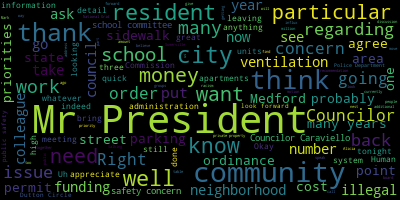

[Knight]: Thank you.
[Falco]: Pursuant to Governor Baker's March 12, 2020 order suspending certain provisions of the Open Meeting Law, General Law Chapter 38, Section 18, and the Governor's March 15, 2020 order imposing strict limitation on the number of people that may gather in one place, this meeting of the Medford City Council will be conducted via remote participation to the greatest extent possible. Specific information and the general guidelines for remote participation by members of the public and or parties with a right and or requirement to attend this meeting can be found on the City of Medford website at www.medfordma.org. For this meeting members of the public who wish to listen or watch the meeting may do so by accessing the meeting link contained herein. No in-person attendance of members of the public will be permitted, but every effort will be made to ensure that the public can adequately access the proceedings in real time via technological means. In the event that we are unable to do so, despite best efforts, we will post on the City of Medford or Medford Community Media website an audio or video recording transcript or other comprehensive record of proceedings as soon as possible after the meeting. Okay, I just wanted to, just make a quick statement regarding these meetings here. So last week we had a Committee of the Whole meeting at City Council Chambers, and the public was able to access the meeting via Zoom. Tonight, the council members are back home, accessing the meeting via Zoom. The reason why we are doing this from home tonight is we have early voting this week in City Hall, and I know Clerk Hurtubise has been working hard at that since Saturday. I know that's been taking up most of his time. They have the tabulation machines behind the rails and they would have to move everything. So this should be, uh, hopefully the last time that the council has to log in from their homes and we can do it, uh, in council chambers. The council can meet in council chambers going forward. Uh, and so that is the plan, but I just wanted to explain that before we get started.
[Marks]: Mr. President, Mr. President, I call for suspension of the rules to take a paper out of order.
[Falco]: Okay, on the motion of Council of Marks to suspend the rules, seconded by? Second. Vice President Caraviello, Clerk Hurtubise, please call the roll. This is to take a paper out of order.
[Hurtubise]: Councilor Bears? Yes. Vice President Caraviello? Yes. Councilor Knight? Yes. Councilor Marks? Yes. Councilor Morell?
[Falco]: Yes.
[Hurtubise]: Councilor Scarpelli?
[NqJnNNyD4Uw_SPEAKER_06]: Yes.
[Hurtubise]: President Falco?
[Falco]: Yes, 70 affirmative, zero negative. The rules are suspended. Councilor Marks?
[Marks]: Thank you, Mr. President. I ask that we take paper 20-521 out of order. 20-521.
[Falco]: 20-521 offered by Councilor Marks. Be it resolved that the sidewalks on Judson Circle be replaced in the interest of public safety. Councilor Marks.
[Marks]: Thank You mr. President, I want to thank my colleagues for taking this out of order We have a number of residents from Dutton Circle Underneath a blue tent tonight on their front lawn as we can see them all waving And I'd like to speak on their behalf. Mr. President regarding an issue that took place back in 2017 when residents woke up to a national grid cutting down two trees apparently that were interfering with high tension wires on the street. Shortly after that, Mr. President, the city came by and ripped out two stumps and then set forms to pour new cement sidewalks because the city ripped up about 150 feet of sidewalk along Dutton Circle. And this was not at the request of the residents. It was because of the work done by National Grid, the safety work that was done by National Grid. Fast forward almost three years later, the residents are still waiting to get the sidewalk poured in cement. The farms are still there on the street from 2017. There are raised water shutoff valves that are causing a trip and fall hazard. And Mr. President, I received a call about It's probably about three hours ago from Commissioner Kerins and Highway Director Steve Tanaglia. And they assured me tonight, Mr. President, and they were out there today mocking off the sidewalk, that the residents on Dutton Circle, the long-awaited three years for these sidewalks that they were promised by the previous administration, will now be poured very shortly, Mr. President. And I want to thank the residents of Dutton Circle for their patience on this. I want to thank the city administration for moving in a quick manner on this administration, moving in a quick manner. And I want to thank Commissioner Kearns and Steve Tanaglia for their due diligence on this. I think there are a few residents, Mr. President, I know Emily's on, that would probably just like to speak briefly to the council, if you would indulge. Okay, thank you, Councilor Marks. Emily, would you like to speak?
[Unidentified]: I'm trying to unmute you, one minute, please. Okay, Emily, we just need your name. Oh, you just... Okay, Emily, if we could please have your name and address for the record.
[SPEAKER_29]: My name is Emily Singley. My address is 10 Dutton Circle. And on behalf of all of us on Dutton Circle, I'd like to reiterate what Councilor Marks just said. Thank you very much to the city. and their commitment to poor our sidewalks. It took three years, and I especially wanna thank you, Councilor Marks, for your persistence in this effort. It's greatly appreciated by all of us. You can see the residents behind me. So thank you again very much.
[Falco]: Thank you. Would any other residents like to speak on this issue?
[SPEAKER_13]: Move approval of the paper, Mr. President.
[Falco]: Okay, let's see, on the motion of Councilor Knight, seconded by... Vice President Caraviello. Vice President Caraviello.
[Caraviello]: Thank you, Mr. President, Mr. Mayor. I want to thank Councilor Marks for being up in front of this. I know he's been there many times. And again, I want to thank him for his hard work and also thank the administration and Mr. Cairns and Steve Tanaglia for getting out there quicker than, than three years, but we're glad we got it done now. I'm glad it's gonna get done now and hopefully the residents will be made whole for all their time waiting. So again, thank you, Councilor Marks, and thank you, Emily, and all your neighbors out there for waiting this long.
[Falco]: Thank you, Vice President Caraviello. Emily, thank you for phoning into the meeting tonight. Thank you, Councilor Marks. On the motion of Councilor Knight, seconded by Vice President Caraviello. Please call the roll.
[Hurtubise]: Councilor Bears. Yes. Vice President Caraviello. Yes. Councilor Knight. Yes. Councilor Marks. Yes. Councilor Morell.
[NqJnNNyD4Uw_SPEAKER_06]: Yes.
[Hurtubise]: Councilor Scarpelli. Yes. Vice President Falco.
[Falco]: Yes, 70 affirmative, zero negative, the motion passes.
[Caraviello]: Mr. President, while we're on the suspension, we take paper 2059 and I think many of the other councilors all have a similar resolution on this.
[Falco]: Can I take 20509?
[SPEAKER_16]: Yes. Maybe we can consolidate, Mr. President. We can consolidate them all.
[Falco]: Okay, so on the motion of, let's see, on the motion of Council Knight, seconded by Vice President Caraviello to consolidate the following resolutions.
[Hurtubise]: Mr. President? Do you have to move to take the paper while you're under suspension already, or can you just take it because you're under suspension? We're under suspension, so we can take the paper. Okay, so Council Knight's moving to consolidate.
[SPEAKER_16]: Papers 2-0-5-0-4, 2-0-5-0-8, 2-0-5-0-9, 2-0-5-1-4. And if we could consolidate those under 2-0-5-1-9 with the draft ordinance, Mr. President, I think that we'll be on a good track. OK, so I can do that. Consolidate under 2-0-5-1-9. That's the mayor's proposed ordinance for what looks like road and abatement.
[Falco]: Okay. You want to read each of those out then?
[Caraviello]: You can read any one of them. I think they're all pretty much the same, Mr. President.
[Falco]: Okay, 20-504 offered by Councilor Neill, Councilor Scarpelli, be it resolved that the method, I'm sorry, be it resolved that the Board of Health and Engineering Department need to strengthen the road abatement policies related to ground opening and other construction related permits and report back to the council their determinations. I'll just read them off to everybody. 20-508, offered by Councilor Marks, be it resolved that the Board of Health Director report back to the Medford City Council regarding what steps the city is taking to address the city-wide rat problem and public's health and safety of Medford residents. 20-509, offered by Vice President Caraviello, be it resolved that the Medford City Council request the Board of Health Director attend the August 25th meeting to discuss the problems with rats throughout the city of Medford and what is being done to address this serious issue. 20-514 offered by Councilor Morell. Be it resolved that the Medford City Council receive an update from the Board of Health on programs and resources available to protect the health and safety of city residents in light of reports of increased rat activity throughout the city. And under communications from the mayor, this will be 20-519.
[SPEAKER_13]: August 20- I'm going to waive the reading and have a brief synopsis by the representative of the administration here to present this evening, Mr. President.
[Falco]: Okay, on the motion of Council tonight to suspend the reading for brief synopsis by the administration. Let's see, is Dave on the line with us tonight?
[Unidentified]: He is.
[Falco]: Oh, there he is. Chief of Staff Dave Rodriguez, if you could please give us a brief synopsis of 20-519.
[Dave Rodrigues]: Good evening, Mr. President. Thank you to the rest of the council as well. The draft ordinance that's being presented by the mayor tonight would add Chapter 71 to the revised ordinances of the city and would establish road and control measures that are in place for building construction, road construction, as well as establishing and requiring plans to be put forth for mitigation from restaurants and other businesses. There's also a fee structure that's in place that would provide that would be put into a revolving account, which is also being created by the proposed measure. The purpose of which would be to support rodent mitigation and other measures that directly work towards mitigating rodents, rats, mice throughout the community as the result of any number of issues and whether not just construction, but also we all know that rats and other vermin they thrive where there's water and there's food, and we need to try to do that in a densely populated area. So this is a pretty, we view this as a pretty progressive and aggressive way in order to do that. And we look forward to having a conversation with the council and the community at large to put the measure forward in order to address the multiple items that were put forth by the council and the community in recent times.
[Falco]: Chief of Staff Rodriguez, Councilor Bears.
[Bears]: Thank you, Mr. President. And thank you to my fellow Councilors for many of you for bringing this issue up. I just have a couple of questions, Dave. In terms of the fee structure, how did you arrive at the amounts that you arrived at? And is there an estimate of how much this might raise over a year?
[Dave Rodrigues]: We tried to do it as fairly as possible. And this was a conversation that the mayor rolled up her sleeves personally and really dove in with Maryann O'Connor and a number of individuals. And we looked at what other communities were doing in terms of this. So the fee structure is in line with what other cities and towns are doing. You will see that there is no fee that's related to restaurants and other small businesses. that was included, but in light of some of the challenging times that are being faced by restaurants and small businesses, given the economic times, that fee was removed as part of this proposal and can certainly be added in later as part of it. They will certainly have to also submit an IPM, which is with the plan, that's part of it, but there's no fee associated with those measures. So what other cities and towns are doing, try to bring it in line with that and try to be as fair as possible.
[Bears]: Got it. Yeah. And then just kind of on that general scope, um, you know, how much might this raise in a year? What is the general cost of some of the road and abatement measures that you want to implement and that we all want to see implemented? And like, would these fees provide enough revenue to accomplish the goal?
[Dave Rodrigues]: Sure. I don't know. I don't have the exact figure as to what, if we've modeled this out yet, but I can certainly get that information for you. And I can touch base with Marian O'Connor, who is on a very well-deserved vacation at the moment, to get the exact amount of which we've spent on road mitigation and baiting and trapping in the last couple of months, especially as we've seen an increase. So I can get that information for you, no problem.
[Bears]: Thanks, Dave. Super helpful.
[Falco]: Thank you Councilor Peters, Councilor Nathan, Councilor Caraviello.
[Knight]: Mr. President, thank you very much. I'd like to recommend maybe a committee of the whole on this paper so that we can go over it in further detail. There are certainly some great aspects to it and some questions and concerns that I have relative to whether it applies to dumpster permits as well, whether or not we could extend this maybe to cover some compost files or some requirements around composting as well, Mr. President. So with that being said, I'd offer the motion that we convene in the committee of the whole to go over this ordinance. I'll second that.
[Falco]: Do you want to do that as a B paper, Councilor Layton?
[Knight]: It would be the motions to just have a committee of the whole. So I don't know if it has to be a B paper. I'm not amending it in any way.
[Falco]: OK. seconded by councilor Scarpelli to have a committee to hold regarding this. This issue, or more specifically to have a committee to hold regarding 20-519. Clerk, please call the roll. Mr. President. Council Marks.
[Marks]: Mr. President, thank you very much. And I want to thank my other colleagues for putting this on tonight. You know, this has been, I probably put this on the agenda for the last four years. And it's been a major issue in our community. Originally, it started out in South Method on the Somerville Method line. Then the Heights received a large amount of infestation. The Wellington area, which I live in, was recently baited and trapped. put down. And I think as part of an ordinance, you know, I like this ordinance. I think it needs to be properly vetted. I agree with Councilor Knight. However, we do have to look at enforcement, Mr. President. Many residents in this community are complaining about people leaving trash outside food in the backyard, leaving open invitation for these vermins to come in and feed and feast. And that's why they're hanging around. Another issue, Mr. President, is, in my opinion, the lack of baiting and trapping in the community. We're not as aggressive as I believe we should be. And that's, I think, a discussion we need to have with the city administration when we start vetting out the ordinance itself. The last point, Mr. President, I have is regarding private property. I've heard all too many times when the city goes out and they start doing their baiting and trapping that they've witnessed Borrowing and nest on private property and I can understand the city can't be the gatekeeper for everyone's property however, if there's a nuisance of a property that's in a particular neighborhood and the city's aware they can see that there's nest and infiltration and and so forth. I think more needs to be done, Mr. President, to work with homeowners and maybe work with absentee landlords that may not give a damn, that don't live in the area, to be quite honest. And I think we have to do more as a community to safeguard the neighborhoods. And if we do locate these nests that are borrowed into private property, I think the concern should be with the residents as well as the city, Mr. President. And I think that'll go a long way to curbing the rat problem that we've had in the community for many, many years. This is not a recent issue. It's not because of just recent construction. This has been ongoing for many, many years in the community. And I look forward to having a dialogue, Mr. President, where we can address this by city ordinance and also by enforcement and outreach, which needs to happen as well in the community. Thank you.
[Falco]: Thank you, Councilor Marks. Any other councils like to speak on this issue? Councilor Knight and then Vice President Caraviello. Councilor Knight.
[Knight]: Mr. President, thank you very much. And building on what Councilor Marks had to say, I think it makes great sense. You know, government's constructed to help people. Government's constructed to deliver services. It shouldn't be an us versus them situation. When someone calls and says they have an infestation problem in the neighborhood, that's a serious issue and a serious problem. You know, it's gross, quite frankly. I mean, government should be reaching out and doing all they can to help. And the property line should not be the determining factor as to whether or not individuals are going to be receiving government services, especially here at the local level. You know, I think that moving forward, enforcement is going to be an issue, but also our Board of Health reaching out and helping residents when they run into this situation, circumstance and helping them bait and coming up with a road and abatement plan for them. And maybe having some of these funds from the revolving account used to go back into the community to help people who are facing infestations, being able to fund some extermination services. So with that being said, Mr. President, I'm looking forward to meeting on this.
[Caraviello]: Thank you. God tonight. Vice President Caraviello. Thank you, Mr. President. Again, Council marks mentioned many of the things that I was never but I agree with them that we have to step up with the people that are beating these companies are supposed to be doing it. They need to increase what they're doing. Also, like he said, you know, we've got many abandoned properties in the city of Medford. with absentee landlords. And it isn't just the abandoned properties. Also, there's many, many, many abandoned vehicles in people's driveways and on side streets that have been sitting there for years that have now become rodent traps. So again, I think we do need to sit down with our committee and more sooner than later, because as I said, there is construction going on pretty much everywhere in the city that you go. So Mr. President, if you could call a committee at the whole meeting. I know we've got many on the agenda, but if you can kind of move this one to the head a little quicker, it'd be greatly appreciated. And I think the residents would be appreciated, especially with all the construction that's going on around the city right now.
[Falco]: Thank you very much. Any other questions or comments from the council? Mr. President?
[Marks]: Councilor? Just if I could, as we all know, we also have many state roads and state parcels of land in the community, which the city is not responsible for. And I need to say that I did reach out immediately to Representative Donato because it was the Wellington area. And he was quick to respond, Mr. President, regarding concerns and quick to address it on the state level as well. And I just want to thank Representative Donato for his work.
[Falco]: Any other questions or comments from the council? Okay, seeing and hearing none, any questions or comments from the public? Yeah, do you see anybody's hands up? I don't see anyone, but I just wanna make sure I didn't miss anyone. Actually, let me unmute you.
[Unidentified]: You're still muted.
[Knight]: Sandy hasn't seen anyone. I can read his lips.
[Falco]: Oh, okay, good. Good job, Councilor.
[Knight]: Councilor Knight.
[Falco]: Okay, so with that being said, the first vote will be to merge all these papers together under 20-519. So on that motion to merge these papers together, Clerk Curnaby, please call the roll.
[Hurtubise]: And I believe Councilor Knight made the original motion to merge. And I believe it was, I don't actually see a second on the original motion.
[Falco]: I believe it was Councilor Scarpelli.
[Hurtubise]: Okay.
[Falco]: Councilor Knight seconded by Councilor Scarpelli. Clerk Curnaby, please call the roll.
[Hurtubise]: Councilor Bears. Yes. Vice President Caraviello. Yes. Councilor Knight. Yes. Councilor Marks. Yes. Councilor Morell.
[NqJnNNyD4Uw_SPEAKER_06]: Yes.
[Hurtubise]: Councilor Scarpelli. Yes. Vice President Falco.
[Falco]: Yes. Seven in the affirmative, zero in the negative. The motion passes. On the motion of Councilor Knight, seconded by Councilor Scarpelli to schedule a committee of the whole meeting to discuss 20-519. On that motion. Please call the roll.
[Hurtubise]: Councilor Bears. Yes. Vice President Caraviello.
[Falco]: Yes.
[Hurtubise]: Councilor Knight. Yes. Councilor Marks. Yes. Councilor Morell.
[Falco]: Yes.
[Hurtubise]: Councilor Scarpelli. Yes. Senator Falco.
[Falco]: Yes. 70 affirmative, zero negative, the motion passes.
[SPEAKER_16]: Motion to revert back to the regular order of business.
[Falco]: Motion to Councilor Knight to revert back to the regular order of business, seconded by Councilor Bears. Clerk, please call the roll.
[Hurtubise]: Hang on just a second. Councilor Bears? Yes. Vice President Caraviello? Yes. Councilor Knight? Yes. Councilor Marks? Yes. Councilor Morell?
[NqJnNNyD4Uw_SPEAKER_06]: Yes.
[Hurtubise]: Councilor Scarpelli? Yes. President Falco?
[Falco]: Yes. Seven affirmative, zero in the negative. We will now revert to the regular order of business. Motions, orders, and resolutions of 20-503 offered by Councilor Knight. Be it resolved that the Medford City Council requests the city administration implement beautification standards for establishments granted preliminary outdoor dining licenses under the governor's emergency order. Councilor Knight.
[SPEAKER_16]: Mr. President, thank you very much.
[Knight]: This is a resolution that is not intended to present another undue burden on our already struggling businesses that are facing the coronavirus epidemic. However, I do think we can do a better job in presenting some curb appeal when we're doing some of these outdoor dining license and outdoor dining establishments, Mr. President. For example, we've seen what they've done down at Bistro 5. They put some lattice work up, they put a tent up, they put some lights up, and it looks nice. But then you go to other places in the community and you see the concrete Jersey barrier taken up five parking spots, and that's all it is. So I'm hoping that maybe we can implement some minimum beautification standards on the outdoor dining license, Mr. President, so that when we do have areas that need to be protected with Jersey barriers and the like, we also have some requirements and standards to maintain, keep, and improve our curb appeal. So that's the intention behind this resolution and I ask my council colleagues to support it.
[Falco]: Thank you, Councilor Knight. We have Councilor Scarpelli, then Councilor Morell. Councilor Scarpelli.
[Scarpelli]: Thank you, President Falco, and thank Councilor Knight for bringing this up. I do have a concern to follow up with this. I got a few emails this week, a little too late to put it on the agenda, but it might help if we could, Councilor Knight would allow me to amend it to ask the, the code enforcement officer, if they can go out. I know that some of the Jersey barriers, I believe, in West Medford, I was told that it doesn't suffice for our residents in wheelchairs. So I believe we have a few people in West Medford that traverse that area, and unfortunately, couldn't make their way in front of a restaurant. So if we can ask our city administrations, please, just to go out there and measure just to make sure that we're in compliance. I think that beautification is important, but we still have to have safe pathways for our residents, especially our residents that need assistance to maneuver through that area. So if you can, I make that as a motion if we can. Thank you. I have no opposition. I have no opposition to the amendment, Mr. President. Thanks, Councilor.
[Falco]: The resolution has been amended by Councilor Scarpelli.
[Morell]: We have now Councilor Morell. Thank you, Mr. President. Yeah, I did have some residents reach out about this as well. So I thank Councilor Knight for bringing this forward. And I did speak with Ms. Briseño in the Office of Community Development, and she did say the grant money that is being used for some of these Jersey barriers would allow for it to be used for decorations too. So that's just helpful information for those businesses should this pass. So thank you.
[Falco]: Thank you, Councilor Morell. Any questions or comments from the council? Okay, seeing and hearing none, any questions from the public or any comments? Okay, let's see, we have Chief of Staff Rodriguez, and then we have Susan Bibbins. Let's see, Dave Rodriguez.
[Dave Rodrigues]: Thank you, Mr. President. Thank you to the rest of the council as well. It's a point certainly well taken for us. We had a lengthy conversation with some staff this week regarding the beautification of some of these, especially the ones in which Jersey barriers were placed. And I know that we've engaged with conversations with the Chamber of Commerce to paint these things, make it more appealing, make it more aesthetically pleasing. So it's certainly something that's on our radar screen for the upcoming future. And if there are any concerns about ADA compliance or measurements or anything, please forward those to me or to the code enforcement officer. We'll have you to look over those as soon as possible. That's certainly a concern of ours. When we did these measurings, we had a pretty deliberate and thoughtful ways to how we were doing it to make sure that that was in play when we were discussing this. So, but things have moved around or if there's some compliance that we have to engage with, we're happy to do that as well.
[Falco]: Thank you. Let's see, we have Councilor Knight.
[Knight]: I would like to commend the administration, Mr. President, on getting the emergency outdoor dining licenses up and running in relatively fast order. When the governor issued his executive order allowing outdoor dining licenses to be issued under the emergency order, the administration embraced it and ran with it. So, you know, it's not to be critical of the job that they've done at all because they've done a great job. It's just a suggestion as to how we can improve. So I appreciate the work that they've done.
[Dave Rodrigues]: That's certainly a point well taken. We wanted to get them up and running so that they could survive and thrive first. And now we're happy to make them integrated to the community, integrated to some of the squares as well. So the regs weren't necessarily designed for a place like Medford, but we were certainly able to embrace it pretty quickly. The mayor made it a priority, and OCD did a great job pushing it through.
[Falco]: Thank you. Let's see. Susan Bibbins, name and address for the record, please.
[Susan Bibbins]: My name is Susan Bivens, and I live in South Medford. I'm Ward 2, Precinct 8, or the other way around. I'm the chair of the Commission for Persons with Disabilities, and I'd just like to remind you and I just want to caution you and charge everybody with making sure that the outdoor door dining establishment has clearance with your jersey barriers or whatever they put up and remember the corners and remember those curb cuts and that kind of thing. So people with mobility challenges or using wheelchairs for mobility can have access to where they need to go. So that's just my two cents. Okay, thank you.
[Falco]: Let's see, we have Vice President Caraviello had a comment. Thank you, Mr. President.
[Caraviello]: To the Chief of Staff, Dave, how long are these outdoor dining establishments gonna be out there till? Do you have a date?
[Dave Rodrigues]: Yeah, the regs are active until November 1st. November 1st? Yeah, that's the window in which we have to work with. Thank you.
[Scarpelli]: Again, just to reaffirm what Councilor Knight said, we appreciate all the effort to keep the businesses afloat and keep them going, but is there a way that maybe we can use some of that money to commission some of our high school students, our talented artists that have gone out and painted these utility boxes. That might be an avenue that we could really help with those Jersey areas. They're so talented. You see it all over this community in different ways. Maybe that might be an avenue that we can really invite our our community and we have so many of these blocks that might be something that if there's a way that the city can make that work or if that that we could you know bring some kids in for community service or or uh anything that uh would help that but just a suggestion thank you thank you council Scarpelli uh let's see any other questions from the council comments from the council okay seeing and hearing now we have a comment uh question from
[Falco]: Is it Marcia?
[_tT-sIarT8Q_SPEAKER_22]: Yeah, it's Marcia. Yeah, hi. I'm Marcia Cheerson, 11 Upton Terrace, Medford. I want to thank you so much for thinking about accessibility in this project, because as those of you who must remember me from last year, I think it's really important if Medford can be a city that leads the way in in keeping that in mind for everything, all construction and all new regulations and to make the idea of accessibility as broad as possible because I'm sure you know by now that the ADA does not cover all accessibility needs by any means. And I believe that Medford has the ability to be more forward thinking. And I thank you so much for hearing me about this so much. Thank you.
[Falco]: Any other comments or questions from the public?
[Hurtubise]: I think Rick Jordan may wanna speak, Mr. President.
[Falco]: Okay, let me find him. Actually, if you find him,
[Unidentified]: Please unmute him. I'm looking.
[Hurtubise]: He just told me he can't find the raise hand function, so I'm thinking he might want to talk, but I can't find him.
[Morell]: If you go to participants, if you click participants, you can then search a list, and you can just type in and unmute people as you find their name.
[Knight]: Rick looks like he's on the beach. He's got the picture of the beach with the rocks in the ocean. I got him.
[Hurtubise]: He's muted, Mr. President. I'm having trouble unmuting him.
[SPEAKER_04]: All right, let me see. I do not have a question at this time, but I cannot raise my hand for a future discussion and was not able to in the past few meetings. I have a Windows computer.
[Falco]: Rick, do you have a question now, Rick? I'm sorry, I missed that first part.
[SPEAKER_04]: No, not currently, thank you.
[Falco]: Okay, thank you. Okay, I believe Councilor Bears.
[Bears]: Thank you, Mr. President. And it's really up to Councilor Knight. I was wondering if we could amend this to also make sure that as Susan and as folks have said that we make sure that this is looking at access for people with disabilities. If we're going down there for beautification, we might as well make sure there's the necessary clearance for people who need access.
[Knight]: With all due respect to the commentary around ADA compliance, that's the standard. That should be happening regardless of what's going on in our community. I think that it might be important for us if we do have some locations or sites in the city that we ask our ADA compliance officer, the director of diversity to go down there and check it out. You know, it certainly won't take anything away from the resolution, so I have no problem with you putting it in there. But the sole principle and purpose was for us to, you know, create some standards and beautification standards. ADA compliance is always an issue. It's always something that we need to do. It's always something that we should be focused on. So I have no problem amending the paper to reflect that. However, I don't want it to detract from the principal goal and objective.
[Bears]: No, and I appreciate the principle. I think it's really important that we do it. And it's just, if we're going down there to look at the beautification, it's another opportunity to check those distances. So I appreciate that, Councilor Knight.
[Falco]: So you are amending Council of Heirs?
[Unidentified]: Yes.
[Falco]: Okay. Let's see. Any other questions from the Council? Okay. On the motion of Councilor Knight, seconded by Second, Mr. President. Vice President Caraviello as amended by Councilor Scarpelli and Councilor Bears. Clerk Cunabese, please call the roll.
[Hurtubise]: Councilor Bears. Yes. Vice President Caraviello. Yes. Councilor Knight. Yes. Councilor Marks.
[NqJnNNyD4Uw_SPEAKER_06]: Yes.
[Hurtubise]: Councilor Morell.
[NqJnNNyD4Uw_SPEAKER_06]: Yes.
[Hurtubise]: Councilor Scarpelli. Yes. Vice President Falco.
[Falco]: Yes, so the affirmative and the negative, the motion passes. 2-0-505 offered by Councilor Knight, be it resolved that the Medford City Council request the city solicitor provide a draft zoning amendment authorizing the construction of accessory dwelling units for council deliberation. Councilor Knight.
[Knight]: Mr. President, thank you very much. Accessory use dwelling is a self-contained apartment in a single family homeless owner occupied attached or in a separate structure on the same lot of land. Many times these are referred to as in-law apartments or granny flats is another term that I've seen raised. But what accessory dwelling units will allow us to do is to create more affordable housing stock in our community and more housing stock in our community. We hear a lot about people that are being overhoused, people that are single living in a two, three or four bedroom home. But because there's a lack of stock and a lack of affordable stock, especially, there are many downsides. So Mr. President, looking at what's going on in our community, the cry for more affordable housing and more housing stock in the greater Boston area, and the fact that studies would show that by allowing accessory dwelling units, assessments go up anywhere between 25 to 34% in communities that allow accessory dwelling units in terms of property taxes. I think it's something that's very worthy of review, examination and debate. Previously, the city of Medford did allow accessory dwelling units and they allowed them well before any of our time, well before Mr. Moki's time through what was called the restrictive covenant. And that restrictive covenant was filed at the registry of deeds saying that when this parcel changed hands, that the accessory dwelling unit, which would have a kitchen and a bathroom in it, the kitchen would be removed. It would not be sold as a multifamily dwelling. So that's something we can also take a look at, Mr. President. Obviously, the restrictive covenant became something that became difficult to enforce, and that's why it fell by the wayside. So that may not be the best way to move about it, but it is an option for us. So with that being said, I think that it would make sense for the building commissioner and the city solicitor to provide us with a draft for us to debate, deliberate, and hopefully discuss with Mr. Bob Roski. I've had the opportunity of speaking with Andrew a little about this from our community development board at great lengths. Andrew is an expert in smart growth and accessory dwelling, accessory use dwellings. So, you know, he provides us with a vast array of expertise and knowledge in this area. And I think that this is something that the community development board would be excited to work with us on. So with that being said, I asked my council colleagues to support the measure. And, you know, when we talk about accessories dwellings, an apartment above a garage, Mr. President, or a small home in a backyard, you know, with the setbacks and zoning allows for it. So I think that that's, you know, a backyard cottage, something like that, a basement apartment. But just the housing options for people, you know, you know, someone who has aging parents, you know, I think that an accessory dwelling unit will be great for someone in my situation where I have a wife, young kids and an aging father who has his independence, but I would like to have him closer to me. You know, so those are just some things that we need to talk about and discuss, especially when we look at the city of Medford, the desire for us all to age in place and the opportunities and options that are out there and the limits that are surrounding them at this point in time, I think make this a good measure to pursue and to take a look at Mr. President. So with that being said, I rest my case and I'll ask my council colleagues to support the endeavor.
[Falco]: Thank you, Councilor Knight. On the motion of Councilor Knight, seconded by?
[Bears]: second.
[Falco]: Seconded by Councilor Bears. Councilor Bears.
[Bears]: Thank you, Mr. President. Thank you, Councilor Knight. I'm right there with you. I think that was an incredible explanation and I think this is something we should do for our community. So I'm supportive of this and supportive of deliberating on it. I was wondering if we could add a B paper just to get an update from the solicitor's office on the status of some ordinance we've requested and also whether or not KP Law is helping out with ordinance drafting.
[Falco]: Okay. So the, uh, so the B paper, uh, clerk, do you have the language for the B paper?
[Knight]: Mr. President in light of, um, in light of the events that have transpired over the past, uh, since January now, eight months, nine months, the number of ordinances that we've requested to be drafted and the number of ordinances that have come back. I think it might be worthwhile for us to schedule a committee of the whole with representatives from the solicitor's office and the city solicitor to get an update. I filed the resolution maybe 90 days ago seeking for monthly updates as to where we are in the status of the requested draft ordinances. And that's something that I think that we should pursue, Mr. President. We haven't gotten an update on the status of any of our draft ordinances. So it might make sense for us to call a committee of the whole so we can be brought up to speed as to where we are. That's the council work product. I certainly support Councilor Behr's resolution, but I think that it might make more sense for us instead of to get a report back, but to actually have a meeting and get all get in the same room where we can talk about it. So that would be the only request that I make is that he just changed the language in his amendment to require a committee of the whole as opposed to report back from the administration.
[Bears]: I would support that. Thank you, Councilor.
[Falco]: Clark, do you have that language?
[Hurtubise]: So the B paper has been changed rather than an update from the solicitor's office on the status of ordinances requested by the council and whether KP law is helping out with the drafting of the ordinance. You want to committee the whole on that?
[Bears]: Yes. I'd still like an answer on the KP law, but if it comes before or during that meeting, that's fine.
[Hurtubise]: So if I use your original amendment and say as well, as a committee, the whole meeting, does that suffice for everyone?
[Bears]: That works. That's fine, yep.
[Unidentified]: Does that work for you too?
[Falco]: Was that the Councilor Knight?
[Unidentified]: That was the Councilor. It works for me, absolutely.
[SPEAKER_16]: Thanks.
[Falco]: All right. So the B paper offered by Councilor Bears is seconded by? Second, Mr. President. Vice President Caraviello.
[Caraviello]: Okay, Vice President Caraviello. Thank you, Mr. President. I want to thank Councilor Knight for bringing this forward. I think what Councilor Knight when he mentioned, he's talking about people like me. My kids are all moved out of the house and moved away and I got four bedrooms and three bathrooms and me and my wife. That's something, and I know there's many other people like myself, we've got these big houses and we could probably put it in our apartment and it would give us a chance to age in place in the same method where we'd like to stay. Without having to move out and maybe sell the house to maybe one of our family or someone that would.
[Unidentified]: I think that we should... I think... I think we're getting... I think that we should... Clerk Herbie, can you mute everyone please? I'm trying.
[Caraviello]: Thank you. But again, like I say, I think he's talking about people in my age group who, like I say, you know, Our children are all gone. We've got this big house and nobody in it. And I said, you know, probably could do it in our apartment somewhere on the line. So I hope, I wholeheartedly support this and look forward to an ordinance coming forward.
[Falco]: Thank you, Vice President Caraviello. Councilor Marks.
[Marks]: Uh, thank you, Mr. President. I want to thank, uh, my colleague Councilor Knight for bringing this up. Uh, Councilor Caraviello, I have two kids I can drop off tomorrow, if that's all right. Um, Mr. President, um, you know, for many years in this community, We've had accessory dwelling units, however, they're just not permitted or authorized. And those, what I refer to, are illegal basement apartments, illegal attic apartments, and a number of other illegal attachments to homes, Mr. President. And this has been an issue of contention for a lot of years in neighborhoods. especially thickly settled neighborhoods, because you'll see an influx of cars, you'll see an influx of residents. However, these particular illegal units currently are not being permitted by the city. So there's number one, there's a safety concern with electrical, plumbing, heating, you name it, there's a safety concern, Mr. President. And also taxes, Mr. President. Many of these illegal apartments that currently exist now don't pay taxes to the community. So this discussion is well warranted in the community, and it's something that I agree with. And at the very least, we should be looking at in-law apartments, because I agree with my colleagues to allow residents that are at a certain age to stay in their units or their houses, I think makes a lot of sense. We also have to be mindful of the flip side, that once we bring this above board, that we will have an influx into our neighborhoods. And if you think parking is a concern right now, it's going to become even more of a concern. And then we have to look at resident permit parking, potentially citywide permit parking, like they do in Cambridge and Somerville and other surrounding communities. So this actually is probably a great issue to bring up because it's going to bring everything that's currently happening, happening illegal in the community above board right now. And we could take a good hard look at how we want to approach this issue, but also be mindful that we don't want our neighborhoods to turn into an area where there's going to be a mass exodus because there are so many units in an area that it becomes unlivable for residents as well. So I think there's a happy median here that we have to find, but the issue definitely needs to be broached. And I look forward to having that discussion.
[Falco]: Thank you, Councilor Marks. Any other questions or comments from the council? Okay, seeing and hearing none. Let's see, anyone from the public we have? Let's see. Kelly Catalo, name and address for the record.
[Catalo]: Kelly Catalo, 46 Otis Street in Medford. Thank you, Councilor, President Falco. Councilor Knight. Thank you very, very much. For many, many years, I've seen viable apartments being gutted out of these homes as the family moved out, and they were great living spaces. They were affordable for people. Councilor Marks, I know that you have a concern about the cars, and this idea actually came from a fellow realtor in a different state, but what they do in her city is that they only give a certain number of parking permits per house. So if that person wanted to be able to rent out their accessible unit, if they had an extra parking permit for that person, then that person could park on the street. If not, they wouldn't have a parking space. I just think that housing has gotten to the point where it is so expensive right now. What information, Mr. President? What information, Councilor Larkins?
[Marks]: Not to cut you off, Kelly, and I appreciate what you said, but remember that not all streets are permit parking. And it's great to say we have permits, but that's not the case on many, many streets in this community. So in order to implement what you're talking about, we'd have to do some type of permit citywide parking.
[Catalo]: I'm just asking you to consider working with the parking situation just because the housing situation is that dire right now. With COVID, you know, a lot of the younger generation has all moved home. They would love to have an in-law apartment in their mom's house if they still have some independence. So there are so many great ideas and so many places that you can go with this. And if you could also consider what the city of Boston has done, they've taken accessory dwelling unit and they've actually called it an additional dwelling unit. And there is some legislation that's online that you can get right off of the city of Boston website. And if you would consider that, I think that it would help a lot of people be able to afford to stay in our community. Thank you. Thank you.
[Falco]: Any other questions or comments from the public? Oh, I'm sorry, Councilor Morell. Yeah, I think you had your hand up.
[Morell]: I can see Marianne has her hand up, her virtual hand up.
[Falco]: Okay, I see right here. Okay, Marianne, I'm trying to unmute you. Hi, thank you for noticing me.
[Broxton]: Can you hear me? Yes, name and address for the record, please. Marianne Broxton, 25 Exchange Ave in Medford. I have a couple of questions. I noticed that Councilman Knight said that the creation of these apartments would help, you know, hopefully increase affordable housing in Medford. I would love if that was true and if that happens, but my fear is that I know that the city of Boston, any new construction, you have to have 10% of the housing units allocated for affordable housing. So if we're having individual apartments pop up all around the city, what does that guarantee that actually some of them will be allocated for affordable housing? I was looking at real estate, I got a thing that popped up on my Twitter the other day, for an apartment near Tufts that was a five bedroom apartment that was $5,000, you know, which would be great for college students each moving in. But if we're saying, look, what's to prevent like somebody in that area to say, okay, well, I have a garage, let me do it over. Now I can charge like 2,000, 3,000. That doesn't necessarily allocate more affordable housing for people. It might be great for people that want to have like a mother-in-law apartment or something like that, or maybe a little starter home if their adult children are getting married and they want to set them up in that. And I also have a question. I noticed that you mentioned something about the idea of some apartments that don't have, aren't required to have refrigerator and stoves in them, in these types of apartments that it could just be like the bedroom and the bathroom or whatever.
[Knight]: Um, no, no, no, no. I said that there was a restricted covenant on prior prior permitting of these was allowed through a restrictive covenant. And when the property changed hands, the kitchen would have to be taken out.
[Broxton]: Okay, because that's what I'm also curious about, too. Because I know in Massachusetts, when you rent an apartment, though, it does not have to have a refrigerator, but it is required by law to have a stove in it. So I was wondering how, how does that play into if we're saying, yes, this is this is something that we want to have more affordable housing. but then it actually never ends up producing more affordable housing. And then if people can say, well, we don't really have to follow those guidelines.
[Knight]: Well, I mean, the basic economic principle of supply and demand would drive the housing costs down. So, you know, it may not be an affordable housing unit per se by the definition of, you know, an affordable housing unit under Department of Housing and Community Development guidelines, but what it would do is make housing more affordable because our stock would increase. So if the supply exceeds the demand, the cost goes down. If the demand exceeds the supply, the cost goes up. So just the basic economic principle of supply and demand, the more housing units we have on the market, the cheaper that those units are going to be.
[Broxton]: I appreciate that idea, but I really think it has to do with the amount of income for people also, maybe alongside supply and demand, because when we consider how many homeless families are in Massachusetts.
[Knight]: The principle of the accessory use dwelling unit is it's usually a single-family owner-occupied home, right, defined by Massachusetts General Law, a single-family owner-occupied home. So it's not, you know, this isn't something where it's going to be, you know, I'm just throwing apartments up all over the place so tough kids can live there. You know what I mean? This is to meet a need and a demand in the community.
[Falco]: Okay, thank you for your clarification. Thank you. Okay, any other questions or comments? Let's see, we got Jennifer Kerwood. I'm going to try to unmute you.
[SPEAKER_08]: Hi, Jennifer Kerwood, 43 Willis Avenue. I guess my question would be, or I guess suggestions, would be making sure we know how we feel about Airbnbs while considering these sorts of ADUs. I know that there are several cities where things like that would come into place and then it doesn't actually provide housing, it's really just meant for the person to have an auxiliary income. And I have no objection to that necessarily, but if the actual rationale behind this is to provide housing, it would have to be a consideration, what we would do for like VRBOs and Airbnb and things like that.
[Unidentified]: Okay.
[SPEAKER_08]: That's all.
[Unidentified]: Thank you. Okay, we have, is it Will Laverre? Hi there.
[Navarre]: William Navarre, 108 Medford Street, apartment 1B. I think this is a really great thing, accessory dwelling units. I think that we have issues with affordability, not only in terms of the formal notion of affordability, of the technical definition of the department of housing and so forth. But we have the issue that a very small number of people get to live in good locations like Medford. Most Americans have to have a very long commute to work. They don't have any access to trains or buses or all the wonderful things we enjoy here in our community. And I think it'd be really great if some of those people, maybe they're commuting from New Hampshire or North Andover or something. and they'd have to catch a train that comes only once every three hours, they can start move to Medford, it'll help our traffic prices, we have more people living, paying taxes in Medford, rather than commuting far-flung locations. And when fewer people are pushed out to those far-flung locations, People won't be as desperate to pay so much money live here and that's gonna be a slow process supply and demand It's not it is supply and demand and getting a little bit more complex to that But basically the idea is that if you're having to force people really far away They're gonna give an arm and a leg to avoid that they have lots of options. It's gonna be a little bit better It'll slowly get better Accessory dwell you and it's good first step to help that. Thank you.
[Falco]: Thank you See we have a Veronica Hernandez, name and address for the record, please. I'm trying to unmute you.
[SPEAKER_09]: Hello, can you hear me? Yes. Name and address for the record, please. Uh, Veronica Hernandez, 55 Jerome street. Um, so mine is, so this kind of goes piggybacking off of what Marianne had mentioned about, uh, you know, like if like it actually being affordable as somebody who had to move out of Medford and end up back in their parents' house. Um, even though Boston does do those affordable housing units and if they were to come to Medford, they're not really affordable. for the everyday person, especially us college students who had to come back home. Mr. President, point of information.
[SPEAKER_16]: Point of information, Councilor Knight.
[Knight]: This is in no way, shape, or form was a proposal to have these as inclusionary zoning housing units. It was just to allow for The ability to permit for an accessory unit to create more housing stock in the community. And when I think we're all getting hung up on this affordable affordable affordable. This isn't the proposal that's going to be required to be affordable housing, the affordability is going to lie in the supply and demand with the increase in supply. we're gonna be able to drive the cost of housing down. That's where the affordability comes in. Making it more affordable would probably be the best way to put it, but not affordable housing, making housing more affordable, as opposed to increasing our affordable housing stock. These accessory dwelling units in the stock that's going to come with them are not going to be attributable to our 10% threshold under the Department of Housing and Community Development. So I want that to be very clear. The affordability aspect comes into it by increasing the number of units in your community. We're going to hopefully catch up and then at some point meet or exceed our demand so that this cost will continue to drive down. So I don't want us to get hung up on this affordable housing, affordable housing, like it's something that's gonna go towards a safe habit threshold, because that's not the intention of this. The intention of this is to allow people the opportunity to pursue an ability to create in-law apartments and owner-occupied dwellings that are single-family. So that's where this is coming from. I want that to be very clear.
[Falco]: Thank you, Councilor Haynes. Veronica, please continue.
[SPEAKER_09]: No, I'm all set. He said what he said. It's fine. We're good. Thank you. Thank you.
[Falco]: Let's see. Gina Doe, name and address for the record, please.
[Jean Nuzzo]: Can you hear me? Yes, we can. Hi. Thank you. I apologize for not having video. My signal doesn't do so well with video. Thanks for the opportunity to speak on this important issue. I think there's some confusion on what ADU units are and what they're supposed to do. Accessory dwelling units are historically spaces that are created to allow for additional living, typically of related members. So in other words, an in-law apartment. above a garage for your college student to have a place to be. They're not meant to be rental or condo stock. And that's important because we talk about housing and affordability and affordable housing interchangeably, but it's really not. The supply and demand curve does not inflect in housing because housing isn't a consumable like a widget or a bag of sugar. And we really need to stop conflating housing affordability with affordable housing government quota that is required by 40B for the state of Massachusetts and what housing stock does in the community. So while These AHUs have a place in our community to help maintain places for people to be without being displaced. They will in no way, shape or form do anything to increase affordable housing, quote, units that are required as subsidized housing units are, because they're never built with those subsidy funds because they're usually put into existing structures, whether it be a basement, an attic, a front room, above a garage, you're not building them separate. That's the first point I'd like to make. And then the second point is this is just another layer of death by paper cuts. We are currently seeing an influx of housing that's high value housing when we take a parcel and it's cut and subdivided, and we get two or four luxury units that are high-end units that do nothing to offset and increase our threshold of income so that our affordable housing threshold rises with it, which further puts housing affordability out of reach for many Medford residents because at least 40% of Medford residents do not meet that $75,000 a year threshold that we typically see with affordable housing requirements and in affordable housing lotteries. So therefore, while I think this is a commendable thing to be looking at, I would caution that we need to be very precise about what we're doing and how we're doing it in the language and that we're sticking to accessory dwelling units for the purpose that's intended. Because otherwise what we're doing is we're creating yet another loophole for quote developers and flippers to come in and up zone through this new ordinance that we're looking to create. So I would caution people and I would encourage our population to think about housing affordability slightly separate from affordable housing, which is the government mandated portions. So I thank you for your time.
[Falco]: Thank you. May I remind everyone, I apologize, I should have said this from the beginning, my fault. Minute and a half, you get a minute and a half when you're called upon. So if I may, so Kelly. Appreciate the latitude. Thank you.
[Caraviello]: Mr. President. Vice President Caraviello. Mr. President, I think we've gotten a little bit off track on what Councilor Neal brought up. Again, I don't think he was bringing it up as an affordable housing alternative. It was just something that he asked maybe we could look into and maybe have a discussion on. I don't think he brought it up with the point of making them affordable units that would add to our affordable staff. So I want to make that point, Mr. President.
[Falco]: Thank you, Councilor Cabral. Kelly Catala, did you have a comment? I do. Okay. name and address.
[Catalo]: Kelly Catalo, 46 Otis Street in Medford. To follow up what Ms. Caraviello just said and what Mr. Knight said, first of all, Massachusetts state law does allow a owner-occupant to rent up to three unrelated people by the second degree of kindred in their property. So there are access for apartments right now in the city of Medford that a little old lady lives upstairs and she can't afford to pay her taxes and maybe a college student or a young adult is renting her apartment. She is still within the guidelines of the state law. and she's able to pay her tax bill. That young person who's living in that apartment is only paying $600. That is housing stock that we all need. We need for the people in our community to be able to live here. Most of the people in our community are not the people that are going to qualify or even go after you know, some of this housing subsidy stuff that people are talking about. And I really don't feel that Adam Knight was looking to do that. He's looking to make Medford affordable to the people of Medford. And I really hope that everybody can get on board with that. Thank you.
[Falco]: Thank you. Mr. Clark, could you read the language to the B paper before we take the vote?
[Hurtubise]: Yes. The B paper. I don't, I'm, Mr. President, I don't have all the language for the B paper. I'm still trying to copy it down.
[Falco]: The B paper, I believe, was it correct me if I'm wrong, Councilor Bears was a committee the whole to receive an update from the city solicitor.
[Hurtubise]: Okay. I got it. Yes. This is the one that was, there was an update from the solicitor on the status of ordinances and whether or not KP law is helping to, is helping out with ordinances, as well as a committee of the whole to discuss the same issue. Correct. Okay.
[Falco]: On that motion, this is the B paper, on the B paper, the motion of council appears seconded by vice president Caraviello. Clerk, please call the roll.
[Hurtubise]: Councilor Bears.
[Unidentified]: Yes. Vice president Caraviello. Vice president Caraviello.
[Hurtubise]: Yes. Thank you. Councilor Knight. Yes. Councilor Marks.
[NqJnNNyD4Uw_SPEAKER_06]: Yes.
[Hurtubise]: Councilor Morell.
[NqJnNNyD4Uw_SPEAKER_06]: Yes.
[Hurtubise]: Councilor Scarpelli. Yes. President Falco.
[Falco]: Yes, 70 affirmative, zero negative, the motion passes. Let's see, on the main motion offered by Councilor Knight, seconded by Councilor Bears, Clerk Hurtubise, please call the roll.
[Hurtubise]: Councilor Bears. Yes. Vice President Caraviello. Yes. Councilor Knight. Yes. Councilor Marks.
[NqJnNNyD4Uw_SPEAKER_06]: Yes.
[Hurtubise]: Councilor Morell.
[NqJnNNyD4Uw_SPEAKER_06]: Yes.
[Hurtubise]: Councilor Scarpelli. Yes. President Falco.
[Falco]: Yes, 70 affirmative, zero in the negative, the motion passes. 20-506 offered by Councilor Bears. Where is it, Massachusetts?
[SPEAKER_13]: Motion to consolidate with paper 20518.
[Falco]: On the motion of Councilor Knight to consolidate papers 20506. 2-0-5-1-8. Seconded by Councilor Bears. Please call the roll.
[Hurtubise]: Councilor Bears. Yes. Vice President Caraviello.
[Caraviello]: Yes.
[Hurtubise]: Councilor Knight. Yes. Councilor Marks. Yes. Councilor Morell.
[Falco]: Yes.
[Hurtubise]: Councilor Scarpelli.
[Falco]: Yes.
[Hurtubise]: President Falco.
[Falco]: Yes, 70 affirmers here, the negative, the motion passes, the papers are consolidated. Let's see, 20506 by Councilor Bears, whereas the Massachusetts General Court and Governor Baker agreed to maintain fiscal year 2020 funding levels for two major state aid accounts in current EMPs and budgets of fiscal year 21. And whereas these budget extensions level fund Chapter 70 for public schools at $12,143,306, and unrestricted local aid funding, UGGA, at $12,880,443. Now, therefore be it resolved by the Medford City Council that the city administration provide an update on the impact of the state budget process on the city budget and how the funding increase of $1,089,537 for chapter 70 and $963,457 for unrestricted local aid above the levels projected in the fiscal year 2021 city budget will be distributed to our public schools and city services. 20-518 is a paper from the Mayor to the Honorable President and members of the Medford City Council, City Hall, Medford, Massachusetts 02155. Dear Mr. President and City Council Councilors, I respectfully request and recommend that your Honorable body approves to amend the school budget fiscal 2021 from $61,250,000 to $62,339,537, which is an increase of $1,089,537. The governor has committed to level fund chapter 70 at the fiscal year 20 level. The city has budgeted a 10% decrease to chapter 70 for fiscal year 2021 due to the health pandemic. Director, Finance Director, Alicia Dunley. Benjamin is present to answer any questions, to answer any of the council's questions regarding this matter. Sincerely, Breanna Lungo-Koehn mayor. Okay, let's see. Do any of the councilors have questions for Alicia Dunley, Councilor Bears?
[Bears]: I just wanted to say that I'm glad to see the school portion of my motion is on here. Glad that Director Denley Benjamin is here to answer questions. And that leaves the only unresolved question as to what's gonna happen with the local aid funding. So that's now my main question with this motion. Thank you.
[Unidentified]: Thank you.
[Falco]: Move the paper, Mr. President.
[Knight]: approval on the motion of vice president caviello's second of i that's what bears consulate night uh mr president we could just have an explanation from somebody in the administration as to where these funds are going to go when they are re-injected into our school department's budget i'd appreciate that um i know that you know When we were going through the budget process, there were a number of decisions that were not filled. There was the hope that we would be going to be able to recall, I think another 30 or 40 employees. So I think an update would be worthwhile and sufficient at this point in time as to how these funds are going to be expended in the spirit of Council of Business Resolution. I know we have some representatives from the administration here, as well as some representatives from the teachers union that are here this evening as well.
[Falco]: Thank you, Councilor Knight. Alicia or Dave Rodriguez, do either of you have you'd be able to answer those questions?
[Nunley-Benjamin]: Good evening, Honorable Councilors. So the school budget is a bottom line budget. So when you voted, it's not like the city where it's byline. So the school would actually have to tell you how they're going to use that million dollars that was level funded.
[Knight]: Okay. So is it safe to say at this point in time that the school committee is waiting for us to give them their money so that they can figure out how they want to spend it?
[Nunley-Benjamin]: That would be correct.
[Knight]: Sounds good. More for approval, Mr. President.
[Scarpelli]: Thank you. Scarpelli. If we could if we can ask. As soon as this happens, if we could amend this paper, and ask the school committee superintendent to please. I'll be a little clearer with our administrators, our teachers, our students, and our parents. I think that there's so much going on with COVID and, you know, starting a school and what's been happening. Parents not sure who the teachers are going to be. You have administrators that don't know who's going into different classrooms. So if we can have an update sent to all the parties as quickly as possible to eliminate at least that fear and that unease in our kids and our parents and our teachers and administrators, I think it'd be very helpful. So thank you for bringing this forward.
[Falco]: Thank you, Councilor Scarpelli. Clerk Hurtubise, do you have that amendment? I do. Do you want me to read it back? You can, yeah, sure.
[Hurtubise]: Councilor Scarpelli's amendment was to ask the school committee and the superintendent to be clearer with the administrators, teachers, students, and parents, and update all parties as quickly as possible. Do you need a little, do you need to add a little more to that Councilor Scarpelli?
[Scarpelli]: Just on teacher reassignments and dealing with the budget. I think that's very important. So if we can do that, that's all. Thank you.
[Falco]: Thank you Councilor Scarpelli.
[Unidentified]: Vice President Caraviello. Vice President Caraviello.
[Caraviello]: Thank you, Mr. President. I can amend that so we can have a breakdown on to how these funds are being spent, going to be allocated amongst the school. I don't know if that was already in there. My internet keeps coming in and out, but I would like to make that informant's amendment that we be informed on how these funds are going to be spent.
[Falco]: Okay.
[Caraviello]: Thank you, Vice President Caraviello.
[Falco]: Any other questions or comments from the council? Oh, Councilor Bears.
[Bears]: Just Alicia or Dave, What's the plan for the local aid piece of this?
[Nunley-Benjamin]: Through the chair. So we're still evaluating how we're gonna use the unrestricted general government aid on the city side, but it was a priority right away to get the schools the funding that they needed. So in addition to this paper tonight, there's two other papers for reprogramming more funds to the schools for capital items that the council is gonna see. So we're still in the works, we're still evaluating, but we should have something pretty soon.
[Bears]: Great, thank you.
[Falco]: Any other questions or comments from the council? Okay, seeing and hearing none, any questions from the public? Okay. Okay, seeing and hearing none, on the motion of, I think it was, quicker to resume the original,
[Hurtubise]: Councilor Knight moved to approve.
[Falco]: Okay, so Councilor Knight, seconded by?
[Unidentified]: Second.
[Falco]: Councilor Bears, as amended by Councilor Scarpelli and Councilor Caraviello. Clerk Cunterby, please call the roll.
[Hurtubise]: Councilor Bears? Yes. Vice President Caraviello? Yes. Councilor Knight? Yes. Councilor Marks? Yes. Councilor Morell?
[NqJnNNyD4Uw_SPEAKER_06]: Yes.
[Hurtubise]: Councilor Scarpelli? Yes. President Falco?
[Falco]: Yes, seven affirmative, zero negative, the motion passes.
[Bears]: Mr. President, motion to suspend the rules to take communications from the mayor, out of order. Second.
[Falco]: By the motion of Councilor Bears, seconded by Vice President Caraviello to suspend the rules to take communications from the mayor, Councilor Bears. Clerk, please call the roll.
[Hurtubise]: Councilor Bears. Yes. Vice President Caraviello. Yes. Councilor Knight.
[Unidentified]: Yes.
[Hurtubise]: Thank you, Councilor Marks.
[Unidentified]: Yes. Councilor Morell. Yes. Councilor Scarpelli. Yes.
[Hurtubise]: It's seven zero, Mr. President. Sorry. It's six zero and I have to call the president.
[Falco]: Seven in the affirmative, zero in the negative, the motion passes. Councilor Bears.
[Bears]: Just moving to take the other communications from the mayor out of order.
[Falco]: Communications from the New York 20-516 to the Honorable President, members of the Medford City Council, City Hall, Medford, Massachusetts 02155, dear Mr. President and city councilors, I respectfully request and recommend that your honorable body reprogram surplus proceeds in the amount of $703,489.80 from the Medford High School Science Labs Project to the Medford High School Improvements Project in accordance with Mass General Law, Chapter 44, Section 20. Finance Director Aleesha Nunley Benjamin is present to answer any questions, any of the council's questions regarding this matter. Sincerely, Breanna Lungo-Koehn mayor.
[Caraviello]: Motion for explanation from the administration.
[Unidentified]: Alicia, would you like to comment further on this, please? Okay. Good evening, honorable Councilors.
[Nunley-Benjamin]: So there were, I'll start with this paper with some bond proceeds that were done and some MSBA money where they spent all the MSBA and they still had some bond proceeds left in the project that was never spent. So this money can be reprogrammed to the high school for a high school improvement projects. As long as whatever projects they're doing is for the same amount of time that the loan would have been for the science labs. And I know that the high school, some of the things that they were looking at were HVAC. I know that they're looking at, I know I've heard the council too, bathrooms. So there's a lot of projects that they have that improvements that need to go at the high school. And then set up those bond proceeds just sitting there stagnant in the project. If you program them to a new project, they can use those now.
[Caraviello]: Vice President Caraviello, are you all set or? No, I'm a little confused. Why we're taking the money that was appropriated for the science labs? And I mean, I know we need improvements, but why is that allowed to take money that was allocated for a science lab to put it somewhere else?
[Nunley-Benjamin]: Because the project was completed. The project was completed for the science lab and that surplus funding that was left.
[Caraviello]: Okay. Can I ask why there was surplus funding? Did we do the job? Did we did it get completed on the budget?
[Nunley-Benjamin]: I'm assuming it was under budget. So I know whenever I've seen surplus funds, it's usually because you have to borrow for the total of what your estimated project is. And then when you're actually doing the work, it usually does come under and you may have a little bit of proceeds left in this case, there was 703,000 left.
[Caraviello]: It's a little bit more than a little bit, but yeah. I guess if it goes along by long as it goes along with the law, Okay, thank you.
[Falco]: Thank you, Vice President Caraviello. We have Councilor Morell, then Councilor Knight.
[Morell]: Councilor Morell. Thank you, Mr. President. Alicia, you said that the project can be a similar project or however you word it, can be done as long as it's the same amount of time. What's that timeframe? 30 years.
[Falco]: Okay, great. Thank you. Thank you, Councilor Morell. Councilor Knight.
[Knight]: Mr. President, thank you very much. Um, so we have two papers before us this evening. The one that we're speaking of right now is for the $703,000. Correct. Correct. So that is what would have been the savings on the science lab projects through our, um, uh, bond or a bond dissipation notes or whatever it was. However, we were able to save money on that project.
[_tT-sIarT8Q_SPEAKER_22]: Correct.
[Knight]: And now what we're doing is we're gonna take that $703,000 and because we had appropriated that previously for school department capital improvements, we're going to repurpose these for continued school department capital improvements?
[_tT-sIarT8Q_SPEAKER_22]: Correct. Okay.
[Knight]: And then of this $703,000, 112,000 of that is going to be directed towards the HEAC improvements? Yes. Or is that above and beyond?
[Nunley-Benjamin]: That 112, which is the next paper, will be for HVAC. And we put it in for, it was HVAC and boiler replacement, those surplus proceeds. So we wanna put it back into this high school improvements project and work on some of the HVAC.
[Knight]: Okay, so what was the total surplus? Was it?
[Nunley-Benjamin]: So 703, 489.80 was in the science labs. Okay. And 112, 692, 73 was the surplus in the HVAC boiler replacement. I just wanted to combine them all into one high school improvements project for the school committee to make those choices of where it's best serves the schools.
[Knight]: Okay. So now when we're looking at the money that's come in over the past couple of weeks, we have about $1.9 million in funds that have been injected into our unrestricted government and chapter 70 money.
[_tT-sIarT8Q_SPEAKER_22]: Correct.
[Knight]: And we had a $5.5 million deficit right around January 30th, June 30th. Correct. That brings us to about $3.6 million in deficit, restructural deficit right now. Then we have these two papers that's about another million dollars that we're going to be able to invest it back into our school system. So we're looking at having a deficit of about $2.6 million as of right now, compared to where we were June 30th. Correct. We've almost cut the deficit in half over the past 45 days.
[Falco]: Right. Excellent.
[Knight]: Thank you very much. I appreciate it.
[Scarpelli]: Thank you, Councilor. Councilor Scarpelli. Thank you, Mr. President. So, correct me if I'm wrong, Alicia, but could this money be allocated for any adjustments that are needed for getting the buildings prepared for COVID? Is that, you know, to get our kids back into the schools?
[Nunley-Benjamin]: We would use for that, we have CARES Act funds. The schools have CARES Act and ESSER money. The schools have a preparedness grant for preparing for the schools to go back, for the kids to go back. This one would be more for large capital items.
[Scarpelli]: So- Bathrooms, stuff like that.
[Nunley-Benjamin]: Or the school needed to do their HVAC, the school needed to do their windows, the school needed to redo their entire bathroom, something to that effect.
[Scarpelli]: Okay, so Mike, and that's what I was coming to. I know that part of the issue that I've heard was that the HVAC system had to be updated at the high school to make sure it's safe for our students and teachers to return. Is that correct? So is it, is that- They could use it for that.
[Nunley-Benjamin]: They could use it for the updating of an HVAC system. They could use it for that as well.
[Scarpelli]: All right. Do you know if that's something they're looking at, do you know, or is that, you don't know?
[Nunley-Benjamin]: That I don't know I mean you'd have to reprogram this first and then let the school committee make the decision of how they're going to keep the funds.
[Unidentified]: Thank you so much. Thank you.
[Falco]: Thank you.
[Marks]: I just want to touch upon what Councilor Scott probably mentioned regarding the ventilation. Alicia, do you know if we're looking at ventilation upgrades to all the schools throughout the system?
[Nunley-Benjamin]: I know the schools are looking at that.
[Marks]: Okay, the reason why I ask is that during the budget, the school committee came out with a laundry list of priorities and recommendations if they had additional money. Have they put anything in priority for this additional funding? I mean, they're well, we haven't approved it, but they're well aware there's money out there now. Have they put anything in writing to what they're looking at?
[Nunley-Benjamin]: I haven't seen anything and I can't speak on behalf of the school committee.
[Marks]: Right, but we're being asked to appropriate money.
[Nunley-Benjamin]: Right for them to make the decision. Right, so you appropriate and they have a fund and it's awarded I can create an account for them and then they can figure out, they're going to expend the money.
[Marks]: Well, my recommendation would be similar to what I think Councilor Scarpelli was alluding to, that whatever is done with this particular money, that it go towards the eventual reopening of the schools regarding ventilation, safety needs, PPE, whatever else is needed in order and when it's safe to get back into school.
[Nunley-Benjamin]: They couldn't use it for PPE because, as I stated, the Mass General Law says it has to be for at least the same borrowing period. So it would have to be a project that would have a borrowing life of 30 years. So supplies wouldn't be under that. We would fund that out of our CARES Act money.
[Marks]: Okay, well, we'll take out the supply stuff, but anything regarding the cost to reopen our schools eventually, I think would be an important expenditure at this particular stage. We've been talking about restrooms, the bubblers, water bubblers in the high school for many, many years. And I think that's warranted. I'd like to see as a part of a contingent, a part of the approval of this council, that we receive an update immediately from the school committee when they do get together and meet to see what their priorities are and what they plan on spending this money for.
[Falco]: Council Marks, is that an amendment to the paper?
[Unidentified]: It is, Mr. President. Okay.
[Falco]: Clerk, do you have the language on the amendment?
[Unidentified]: Working on it. Councilor Knight, you're up next. Just give us one second.
[Hurtubise]: Can I read the language I had back? Please. Council Marks' amendment is that the council receive an update immediately from the school committee on how the money is going to be spent.
[Marks]: And that we put a priority, Mr. Clerk, that we put a priority on any expenditures for the eventual reopening of public schools regarding safety, i.e. the ventilation system, security, whatever else needs to be in place in order for us, our teachers, our staff, and our children to safely go back to school. Okay.
[Falco]: Thank you, Councilor Marks. Councilor Knight, I'm sorry, Clerk Rodriguez, do you have it?
[Knight]: I got it. Councilor Knight. Just a couple of questions for the finance director, through you, Mr. President. If we fail to reprogram these funds, what happens? Does it just revert back to the general fund?
[Nunley-Benjamin]: No, they just sit back in their capital project.
[Knight]: they just sit back in the capital project account. And by us repurposing or reprogramming these funds, would they be subject to appropriation in the future? Or is this a blank check? We're giving a $900,000 blank check to the school department for the capital fund without them having to come back to us and request appropriation.
[Nunley-Benjamin]: Correct, they would not have to request appropriation. Once you approve the repurpose, as long as it's for the purpose on what you voted, they would not need to come back.
[Knight]: and what's the purpose that we'd be voting now?
[Nunley-Benjamin]: Right now it's for Medford High School Improvements Project.
[Knight]: It's the Medford High School Improvements Project. So what we're doing right now is making a commitment of about $900,000 to invest in improvements just to Medford High School through the passage of this?
[Unidentified]: Yes.
[Knight]: If we do this, it would not be subject to appropriation? Correct. And if we don't do it, it would sit in the same account that it's in and would be able to appropriate that money at a later date? Yes, I request. Okay, so really, really what this is almost was setting up a revolving account almost for Medford High School school improvements. That's going to be funded through the surplus that we saved on these bonds.
[Nunley-Benjamin]: It will be another capital project account. But yes, it'll be funded through the surplus for them to use right away that because I know that they have many projects that need to get done. So instead of coming before your body to borrow money or free cash, we have these surplus proceeds just sitting there that they could use.
[Knight]: And do we know how we're going to prioritize. I think this is similar to what Councilor Scarpelli and Max are talking about, but what are we going to prioritize in terms of where the spending is going to go? I think that's very important. Without appropriation, then, you know, where that spending goes is going to be very important.
[Nunley-Benjamin]: I think, and that would be up to the school committee. I wouldn't be able to tell you, I know that they have been talking about HVAC systems. I know I've seen and heard about bathrooms, but I don't know what the school committee's plan is, so I can't speak on their behalf.
[Knight]: All right, thank you very much.
[Falco]: Councilor Scarpelli.
[Scarpelli]: This is what I'm getting at, Mr. President. And forgive me for all your hard work, Alicia, but I would rather, for one person, I'd rather see our school committee prioritize what we need to get us in the building and then come to the city council for appropriation for the fact that I think it's as much as individuals want their own individual projects go through. I think right now as a community, we all need to be working to make sure that the air quality is acceptable so our kids can get back to school. And I think that giving an open checkbook to the school committee, I don't have much faith in that. So that's why I probably won't be voting on this. So thank you.
[Nunley-Benjamin]: Alicia here. Okay, just a point of information for some clarity. The school was awarded a $960,000 grant for the reopening of the schools. So they do have a grant in place that didn't happen before that your honorable body knew about, so they have that. In addition to that, they also have access to our CARES Act money, which we've been giving them for supplies and things that they need to start. And I know that they're also looking into HVAC, and the HVAC can also go through the CARES Act as well for the COVID-19, because of COVID-19 for the systems. This money would just give the school committee ability to work on other projects that they need to get done that they couldn't get done. because they didn't have those funds available so we're just trying to get them the funds I don't know how they want to spend them and I apologize Councilors I don't have that information and I wish
[Scarpelli]: Good afternoon, Mr. President.
[Nunley-Benjamin]: Good afternoon, Councilor Scarbell.
[Scarpelli]: All due respect, Alicia, I appreciate everything you do, and I know this really doesn't reflect on you at all, but here we are almost to September 1, and we're still talking about what the school committee has to do to prioritize to get our kids back in school, because we've heard nothing. And this is what I'm saying. I think that if putting a priority and getting their list to us to have us vote on it. We'll move that quicker. I think that's the way we should go because I, like again, like we're late in the game. We're really late in the game and we still have a lot of very confused parents and teachers and administrators out there. So thank you.
[Falco]: Thank you councilor Scarpelli. Councilor Knight.
[Knight]: Mr. President, thank you and through you to the finance director. Also, what I heard was that the funds would have to be used only for Medford High School if we appropriated these funds and put them in this account?
[Nunley-Benjamin]: Yes, I put it in Medford High School Improvement Project. Yes, that's what I put, but it can be amended to be whatever schools. But that was right.
[Knight]: So as it's written right now, if the money stayed in the accounts that they were in, they were subject to appropriation, those funds could be used district wide? versus just at that exclusive school?
[Nunley-Benjamin]: My apologies through the chair, if the accounts that they're currently in our high school accounts. So I programmed it back to the high school. You could talk with the school committee if you wanted it to be for the other schools. I just wrote it in a sense it was coming from a high school project to go back to a high school improvements project. So many things about the high schools.
[Knight]: Wouldn't it make more sense for the school committee to come and talk to us when they want us to spend the money versus us giving them the money and then saying, tell us where you're going to spend it later on. That's just food for thought, but I'm going to thank you. I appreciate you clarifying that.
[Falco]: Thank you, Councilor Knight. Thank you, Alicia. Councilor Bears.
[Bears]: Thank you, Mr. President. I know we do have Charlene Douglas from the MTA here, whom I don't know if there's anything additionally that Charlene might want to add to this conversation. And secondly, I'll reserve until after if Ms. Douglas has anything to say.
[Unidentified]: Charlene, would you like to speak?
[Charlene Douglas]: Yeah, so thank you, everyone. Thank you for allowing me this time. So I know that we are in negotiations and we are looking at how to safely reopen all the buildings. So one of the main concerns that teachers, students, parents, everyone has is the air quality, and we are waiting for an engineering firm to do some assessment of not just the high school, but the other buildings. We know that in 2017 and 18, there were some air quality reports done that showed a concern regarding the air quality that was at the high school level. So I know that that is a fact. I know there were other concerns, you know with the high school with windows not having screens You know water fountains broken various other You know structural issues that we have shared, you know with them and in the community at large and I've shared this even on at school committee meetings so I think that that's one of the main concerns that we have is And we were looking at the Harvard study, and I don't have the study here with me, but that study, which clearly showed what the air quality flow should be for each and every building. And that's even in the opening schools dynamic report done by the task force worked on. And that was shared, you know, with that information is there. So I do know that that's one of the major concerns we have with going right now back into the buildings, and in the screens and various other things that's and I don't think that's just um, to the high school. I think that's also in other schools. Um, so that's one of the major concerns we have. Um, as far as, you know, the $960,000 grant, I'm not sure how that is being used. I know that as we have requested that, um, that we bring all the teachers to positions back that we have lost, you know, at that time you all aware of that we lost 30 positions. It is my understanding that the five reading teachers, reading interventions at the elementary schools will be brought back through the chapter 70 funds and various, whatever that may be. So I don't know the answers to all those questions. You know, we have asked the school committee and the administration and They are you know I know they're working on getting some of these things done. We are looking at what remote and hybrid and all those things look like for us to return to school, but the main concern is right now it's not about, you know, teachers want to get back. We have a survey today, and 68% of our staff. right now wants to get back into the buildings, back to work, and the other 32% that have underlying maybe health issues or things like that really are concerned and want to teach remote, which I think will address even some of the parents. But if we do two plans, we're definitely going to need more teachers. Sorry. I hope that answers some questions.
[Bears]: Councilor Bears. Thank you, Ms. President. Thank you. Thank you, Ms. Douglas. I mean, just to me, you know, we know that the the high school is significantly older than the other schools. And it does seem to me that whether it's teachers or administrators or parents and students, that there is real need to address these HVAC issues. I've read some of the similar studies as you miss Douglas. So it's just my position that they should get this money down there as quickly as possible so that we can get projects in motion as quickly as possible. And if we're saying, come back to us and it's a couple of weeks. And I think that puts us in a position where we're actually, stringing people along on these big decisions. So it'd be my suggestion, and how I will be voting, is that we move this money down and get it going.
[Marks]: Order of information, Mr. President. Order of information, Council of Arts. I thought we were just told by Alicia that there was funding available for the HVAC and ventilation, other than this money.
[Falco]: Alicia, could you please clarify? Through the chair, correct. Correct.
[Nunley-Benjamin]: Is that the $960,000? There's a $960,000 grant that they got for reopening the schools. We still have the CARES Act funds that we could use towards ventilation improvement for COVID-19. So there is additional funding.
[Marks]: Right, so we wouldn't be holding any money back regarding ventilation or the needs at the high school at this particular point. What we would be doing, and I agree with some of my colleagues, is stating before we give out any money that we should be asking, what are the projects? which makes sense to me at this particular stage. So at this particular point, Mr. President, I would offer a motion that the council hold back on giving out this particular funding until we do receive a communication from the school committee on what their priorities are and what they intend to spend the, what is it, $815,000 combined? Is that what it is, Alicia?
[Nunley-Benjamin]: seven hundred and three fourteen and the one so yeah eight hundred roughly fifteen yeah you know sixteen thousand yeah
[Marks]: So I would ask, Mr. President, knowing that the CARES Act funding and other additional funding is there to address some of the immediate needs, that this particular money, where we are the appropriating body for this, that we ask that the school committee come back and give us a list of what their priorities and needs are. And at that point, I don't think there's anyone opposed to addressing the concerns of the school department. So I'd put that in the form of a motion, Mr. President.
[Falco]: On the motion of Councilor Lamar, seconded by Mr. President. Second by Vice President Caraviello. Councilor Knight.
[Knight]: Yes, Mr. President. I think it's also important to ask the question, how long have these surplus funds remained in that account? Because if I recollect, I'm thinking that the science labs were probably completed in 2014 or 15.
[Falco]: I believe 15, if you don't mind me interjecting, yes.
[Knight]: So were those funds in that account since that time?
[Nunley-Benjamin]: Yeah, they've just been sitting there. They've just been sitting in the capital accounts. I've been actually since I've come on board, I've been trying to scrub out and clean out most of the accounts. And these these two accounts are just sitting there with surplus proceeds that the school really needs. So I figured, you know, I could clean those out as well.
[Knight]: And this isn't a critique of the job you're doing, because I think you're doing a wonderful job, Miss Nunley. But you know, as the check and balance on The corner office is the check and balance on spending here in the community. And as the body responsible to make fiscally responsible decisions, I think it's important that we have an understanding where these funds are going to be spent and when they're going to be spent. And I'm a little uncomfortable writing a blank check and not knowing where those funds are going to be going. So for that reason, I would support Councilor Mark's motion that we lay these matters on the table until such time as we can receive correspondence from the school committee as to where they intend to spend these funds. I have all the confidence and faith in the world and John McLaughlin, I think he's done an excellent job since he's been appointed the facilities managers for the school department. And I know that these monies will not be wasted. However, we have a job to do here as well. And that's, you know, provide a check and balance on the spending and the buck stops here. And I don't think it's appropriate for us to write a check for 800 and some $1,000 and not know where that money is going. So for those reasons, I'll be supporting Councilor Mark's resolution to amend the resolution.
[Falco]: Thank you Councilor Knight. Let's see Councilor Bears and then Councilor Caraviello.
[Bears]: Thank you, Mr. President. I'll just say our next meeting is in two weeks. When is the next school committee meeting after that? I think we understand the conditions of the high school and we understand the costs of HVAC. And if we're here in three or four weeks, and the reason that projects aren't bid out or that projects aren't underway is because we chose not to send the money down tonight. I don't want the city council to be blamed for that. I think we understand exactly how tense this reopening question is. I think we should be putting all resources possible into getting that reopening done. 900,000, hopefully 900,000 is enough. But I really don't think-
[Marks]: So what is the actual cost to repair and update the HVA system at the high school? We don't know, Mr. President. We don't know. This is all conjecture, Mr. President. We have no idea what the actual cost is. Mr. President, and to just go through something blindly, because even if we appropriate this money and we still need millions of dollars, where are we then, Mr. President? So we should be getting a report from the school side telling us exactly what the cost is, what they're going to do, and what monies are needed, Mr. President. Point of information, Mr. President. I don't know how you operate government not knowing that information.
[Bears]: Point of information, Mr. President.
[Falco]: Point of information, counsel.
[Bears]: beers. I hope where we are isn't that people aren't in the school buildings because we made this choice. So that's my position. It's going to cost millions of dollars. The money is needed. I don't I'm voting no to table because I'm not going to be responsible for delaying schools reopening. Thank you.
[Marks]: Surprise, surprise.
[Falco]: Okay, thank you. Is there a motion on the floor to table?
[Knight]: apparently. Councilor Marks, you said- It was a motion that was made and seconded and debate continued, Mr. President.
[Falco]: Okay, because he said hold back, I should have had you clarify. Councilor Marks, your motion is to table, am I correct?
[Marks]: Motion is to table, Mr. President, until we get a correspondence back from the school committee regarding what their priorities are. And if it's the HVA system, Mr. President, we should know how they're going to spend it and what it's going to cost before we allocate money.
[Falco]: On a motion by Councilor Marks, motion to table is not debatable. I apologize before that the language is a little different. So I apologize. So on the motion of Councilor Marks to table, seconded by? Second. Councilor Scarpelli, Clerk Hurtubise, please call the roll. And this is to table. 120-516. Councilor Bears.
[Hurtubise]: No. Vice President Caraviello. Yes. Councilor Knight. Yes. Councilor Marks.
[Unidentified]: Yes.
[Hurtubise]: Councilor Morell.
[Unidentified]: No.
[Hurtubise]: Councilor Scarpelli. Yes. President Falco.
[Falco]: Yes. Five in the affirmative, two in the negative. The motion is tabled. 20-517. To the Honorable President and members of the Medford City Council, City of Medford, Massachusetts, 02155, dear Mr. President and city councilors, I respectfully request and recommend that the honorable body reprogram surplus proceeds to the amount of $112,692.73 for the Medford High School HVAC boiler replacement project to the Medford High School improvements project.
[SPEAKER_13]: Motion to table.
[Falco]: On the motion of council, I'll make the table. Seconded by? Second. Councilor Scarpelli, Clerk Bernanke, please call the roll.
[Hurtubise]: Councilor Bears. No. Vice President Caraviello. Yes. Councilor Knight.
[Unidentified]: Yes.
[Hurtubise]: Councilor Marks.
[Unidentified]: Yes.
[Hurtubise]: Councilor Morell. No. Councilor Scarpelli.
[Falco]: Yes.
[Hurtubise]: President Falco.
[Falco]: Yes. Five in the affirmative, two in the negative. The motion passed. The motion is tabled. Is there a motion to revert? Motion to revert back to the regular order of business. A motion to Councilor Marksley to revert to the regular order of business, seconded by? Second. Vice-President Caraviello, please call the roll.
[Hurtubise]: Councilor Bears. Yes. Vice President Caraviello. Yes. Councilor Knight. Yes. Councilor Marks. Yes. Councilor Morell.
[NqJnNNyD4Uw_SPEAKER_06]: Yes.
[Hurtubise]: Councilor Scarpelli. Yes. President Falco.
[Falco]: Yes, 70 affirmative, zero negative, the motion passes. 20-507 offered by Councilor Bears, whereas residents of Medford requested that the City of Medford hang a banner stating Black Lives Matter at Medford City Hall as a statement of solidarity and support to begin to address the history of racism and discrimination in our community. Point of information, Mr. President? Point of information, Councilor Caraviello.
[Caraviello]: I'm going to show you. Point of order. Mr. President, I would think Rule 21 applies on this motion?
[Falco]: So rule 21 would be that it doesn't come up for another 90 days, I believe?
[Caraviello]: That's correct. This was discussed and we are awaiting a decision from the mayor's office unless Chief of Staff Rodriguez has an answer for us this evening.
[Bears]: My understanding is that a decision has been made by the mayor's office and this is requesting a copy of that decision. So it's not the same motion as last month. Thank you.
[Caraviello]: Staff is on the call here. Maybe he could enlighten us to the decision. Mr. President, can we finish the reading, please?
[Falco]: If I may, I'm going to read the rest of this, okay? And then we'll go from there, okay? Okay.
[Knight]: Just to be clear, the councilor's motion is to ask for the chairman to make a ruling as to whether or not this paper is out of order?
[Falco]: And I do not think it is out of order because I think this is different from the original resolution was asking for a banner. This is asking for an opinion.
[Knight]: So am I- The original paper that we sent to the administration was to get an opinion as to what the policy was, wasn't it? That's correct.
[Falco]: The policy was asked what the policy was. This here is asking for an opinion. So that's why I don't think that this is, to me, this is not a, doesn't come out of rule 21. That's my, that's how I feel as the chair.
[Knight]: So are you making the ruling on the motion now, or are you reading the paper into the record?
[Falco]: I was going to, well, I told you how I feel. I was going to read it in. I have questions myself, to be honest with you, but I was going to read it in and take it from there.
[Knight]: Okay, so then what we'll do is read the paper into the record and then we'll address the council's motion.
[Falco]: Yes, that's that's fine. Okay. Whereas the Supreme Court of the United States in Rosenberger versus rectors and visitors of University of Virginia established the government speech doctor recognizing that a government entity is entitled to say what it wishes and select views it wants to express and whereas the government speech doctrine has been affirmed and reinforced by Supreme Court decisions including but not limited to Russ v. Sullivan, Johans v. Livestock Marketing Association, Pleasant Grove City v. Summum Walker v. Texas, Division Sons of Confederate Veterans, and Mattel versus Tan, and whereas placing a banner on Medford City Hall meets the multi-factor test defined in Summum and Walker of historic use of the building, including banners to convey government messages to the public's, number two, the public's close identification of messages and signage placed on Medford City Hall with the city government and Number three, the City of Medford's maintenance of effective control over the messages conveyed, and whereas in 2018 the U.S. District Court for the District of Massachusetts in Shurtleff versus City of Boston denied the request for injunction of a plaintiff requesting the flag of a specific flag at Boston City Hall using the government speech doctrine in multi-factor test defined in Summum and Walker, and whereas in 2019, the US Court of Appeals for the First Circuit affirmed the decision of the District Court in Shurtleff with a three-judge panel deciding unanimously to reject the plaintiff's appeal. Now, therefore, be it resolved by the Medford City Council that the city administration provide a summary explanation of the opinion regarding banners on Method City Hall and how it is possible that such an opinion can ignore the U.S. Constitution's government speech doctrine as deemed and affirmed by decades of precedent of the Supreme Court of the United States. So with that being said, Councilor Bears, if I may, when I read this, the last sentence, be it resolved that the Method City Council, that the city administration provide a summary explanation of the opinion I incorrectly if I'm wrong, I checked with the clerk. Do we receive an opinion back from the administration on this? Because I don't have any of my emails in opinion on this. And that's the piece that I'm struggling with. So if you could speak on that, I would greatly appreciate it.
[Hurtubise]: Are you asking me to speak on that, Mr. President?
[Falco]: I'm asking that Councilor Bears.
[SPEAKER_16]: Thank you, Mr. Chair. What about the council's point?
[Falco]: We still have Councilor Knight, I'm sorry.
[Knight]: So what about the Councilor's point of order? Councilor Caraviello made a point of order. He asked for a ruling on the decorum and appropriateness of the paper.
[Falco]: Yes, and I thought it was appropriate to move forward with it.
[Knight]: So you're making a ruling and determining that the paper is not out of order and that it's appropriate?
[Falco]: Correct.
[Knight]: I question the ruling of the Chair.
[Falco]: Okay, Councilor Knight questions the ruling of the Chair. Is there a second?
[Caraviello]: Second, Mr. President.
[Falco]: Second by Vice President Caraviello. please call the roll.
[Hurtubise]: Mr. President, your question is the same as mine.
[Bears]: That is why I put this on the agenda.
[Hurtubise]: Yes. Councilor Morell.
[Morell]: No.
[Hurtubise]: Councilor Scarpelli. Yes. President Falco.
[Falco]: No. Did you get everyone, Councilor?
[Hurtubise]: You forgot a little old me. I skipped him.
[Falco]: Yes, Mr. President.
[Hurtubise]: So that's four to three that the, in the questioning of the ruling. Appeal stands. So Councilor, Councilor Lange.
[Bears]: It'll be on next meeting.
[Falco]: Okay.
[Knight]: So they, so they, so that the calendar wrote, um, yeah, so the papers were a lot of water and, uh, that's it, right?
[Falco]: Yes. The paper has been ruled out of water by, uh, by a vote of four to three. Call for the orders. The name is present. Uh, let's see. Two zero dash five one zero offered by vice-president Caraviello be it resolved. The method city council request that chief Buckley examine the hiring of using recently retired police officers for details that go unnamed in the interest of public safety. First President Caraviello.
[Caraviello]: Thank you, Mr. President. Mr. President, many cities have called out the Massachusetts youths reaching their retired offices to cover details. in their cities. City of Medford, where there's so many projects going on right now, many projects go uncovered with details. And if you recall, a few years ago, it resulted in the death of a resident who fell into a hole because there was no police officer in detail. And I, you know, you drive by and I see, I see Allentown policemen, Baltimore police, every policeman. There's no reason why We can't be using the recent retired offices, the covered details when they go uncovered. And also the city also makes money on these details. So I would request an answer from the chief on whether he would, if he's going to entertain the idea of using them or not.
[Falco]: Thank you, Vice President Caraviello. Councilor Knight.
[Knight]: I certainly can appreciate the spirit of the resolution that's been brought forward. However, based upon my background in organized labor and representing police unions in the past, this is something that may strike a concern relative to collective bargaining rights, collective bargaining agreements and the like, Mr. President. So with that being said, I'll be voting in opposition of this resolution this evening, just because I don't have enough knowledge understanding as to what the collective bargaining agreement says between the Metro Police Performance Association in the city relative to construction details and the like. I certainly believe that public safety comes first and public safety is our number one job. But with that being said, I also don't want to tread on water that's something that's outside our purview and subject to the mandatory requirements of collective bargaining. So for those reasons, I'll be voting against this paper.
[Caraviello]: Mr. President, I think the patrolman's representative union is on the call. If you'd like to speak to that.
[Knight]: I might be more comfortable supporting it after I hear from him then, Mr. President, but thank you very much.
[Caraviello]: I think the patrolman's, Harold McGivory is on the call.
[Falco]: I'll find him in one minute. Let's get Councilor Marks has his hand up. Councilor Marks.
[Marks]: Thank you, Mr. President. I want to thank Councilor Caraviello for putting this on tonight. Clearly, Mr. President, we can't circumvent any collective bargaining issues or concerns. So if that indeed is the case, then this will be ironed out in that particular realm. Mr. President, what Councilor Caraviello just alluded to is a serious public safety concern in our community. We roughly have 35 details per week that go unfilled. That means that when an outside entity, utility company that wants to do business in the community reaches out to the Medford Police Department, they can't find anyone on the police department to fill these particular public safety concerns. And that is very concerning to me, Mr. President, as one member of the council. Additionally, Mr. President, as Councilor Caraviello alluded to, the city gets an administrative fee on every detail, whether it's someone from the city of Medford doing the detail, or if it's someone from the Somerville Police Department that's filling in, or the Everett Police Department. We get a 15% administrative fee. If you add up the number of details that go unfilled in the course of the year, we're talking roughly $100,000 that the city of Medford is leaving on the table, Mr. President. We just went through a budget crisis. We just talked about laying teachers off. We just talked about not rehiring police and fire. And here we are leaving $100,000 on the table, Mr. President. which is a financial concern as well as a public safety concern, Mr. President. We also had, if people recall back some years ago, we had a fatality at one of these work sites, Mr. President, on Salt Street. So this is of grave concern in our community, Mr. President. for our offices as well as public safety. And I agree with Councilor Caraviello that indeed, if we can get retired police officers that are willing to do this particular work, Mr. President, and work it out with the unions and work it out with collective bargaining, this is a win-win for the community. So I support this wholeheartedly, Mr. President, and I look forward to hearing from, I believe, The union rep is also on, and I look forward to hearing his comments as well, Mr. President.
[Falco]: Thank you, Councilor Marks. Let's see here. Harold, I'm going to unmute you. Harold, you should be on.
[McGilvey]: Can you hear me?
[Falco]: Yes. Thank you for joining us.
[McGilvey]: Thank you. Harold McGilvrey. 100 Main Street, representing the Method Police Patrolmen's Association. I did have a discussion with Chief Buckley in regards to this. The Patrolmen's Union presented the chief with a home rule petition that would have gone in front of a state delegation. I did speak with Representative Donato about taking care of that. And we also worked on a policy in regards to retired offices working traffic assignments. It pretty much fell in line with what every other city in town does. We also brought this up to the mayor's office. I've been waiting on Chief of Staff Rodriguez to touch base with me. I know he's on the call for a couple of weeks now. We're meeting on Thursday on a separate issue, and I was going to readdress the issue then. But at this time, our CBA does say that sworn officers will perform the jobs in the city, but we're willing to open it up for retired officers like our brothers and sisters in the surrounding communities have already done. And I'll take any questions if anybody has any questions. Through the chair.
[Falco]: Thank you. Thank you. Thank you, Mr. McGilvrey. Any questions? Oh, Councilor Knight.
[Knight]: So from what I'm taking back from this, Mr. McGilvrey, through the president to you, is that this would require legislative action by the city council to pass a home rule petition and then get that up to Beacon Hill in order for this to become a reality?
[McGilvey]: Correct. We have the language already done. I'm kind of watching the TV, and I don't know if this is, I'm talking on my phone, but I'm watching this on TV, so I don't know how this is coming across.
[Knight]: Like a million bucks, I can hear you perfectly fine.
[McGilvey]: Yeah, fine.
[McGilvey]: You're correct, you're correct, Councilor, you're correct.
[Knight]: Okay, but it would require some, Bargaining at some I mean if the home rule petition passes it would supersede to collect a bargaining agreement But right now your contract would only allow for sworn officers to perform details correct, we would Yeah, correct, we would we would It wouldn't supersede our CBA.
[McGilvey]: It would be something that we agreed to through our seat.
[Knight]: I meant to get Yeah, okay and Right now, when details go unfilled, are there any other entities or bodies that are eligible to participate if a traffic detail's not filled? Do surrounding communities come and help out in MedFed? Does the Sheriff's Department come and help out in MedFed? Are there other entities that are helping out now that, you know, help them perform some of these tasks and duties?
[McGilvey]: Right now, the way it works, we have surrounding cities and towns coming in, we have Melrose coming in a lot lately, we have Malden coming in a lot lately, because the workload in those cities and towns isn't as great as it is right now in Medford and say Somerville, Cambridge, Arlington, those places seem to be busy. And I want to say this, it's a seasonal situation, like we're right now at the peak time for construction work, and it's usually between June to October where we might have trouble filling assignments. We can fill assignments pretty much the rest of the year. It's just right now there's a lot going on and we have offices on vacation and other things going on. There are days where we fill them all and there are days where we don't. But this would definitely help us out. Sounds good to me.
[Knight]: Thank you very much. Mr. President, if I could amend the paper to request that the city administration provide us with a draft copy of the homework petition that's been presented, I think that would be helpful in us as we start to kick off this discussion because it does sound like a win-win if the collective bargaining agreement in the union's willing to be flexible and work with the community to provide this service, then I'm all for it. I'd like to offer that in the form of an amendment that the draft homework petition be provided to the council.
[Unidentified]: Second, Mr. President.
[Falco]: Let's see.
[McGilvey]: Can I say something also?
[Falco]: Yes. Mr. Montgomery, please continue.
[McGilvey]: OK. So I also want to just make clear that we feel that there is no substitute for a trained police officer performing these duties. We had a situation today where a vehicle drove driving erratically. hit a pole on Winthrop Street, the detail officer witnessed it, he was able to call in the plate, sack the car, and the Winchester police intercepted the car. In Winchester, there was a small pursuit and we were able to apprehend the suspect. Having police officers on the street, doing these assignments, it supplements our, for lack of a better term, manpower. And it's times like this right now where we're going in the wrong direction, where our numbers are declining. And when we have officers on the street performing these duties, it's more eyes and ears on the street. And I think that that makes the community at whole, at least the majority of the community, feel safe.
[Falco]: Any other questions from the council?
[Hurtubise]: Mr. President?
[Falco]: Yes.
[Hurtubise]: Can I jump in? Councilor Scarpelli lost his connection. He's dialed back in. I'm trying to get him unmuted. I can't, I can't get him unmuted. He may have a question.
[Falco]: Yeah, I'm trying to unmute him too and I'm not having any luck.
[Bears]: He may be separately muted on his phone.
[Hurtubise]: Councilor Scarpello, are you muted on your own phone?
[Falco]: While we're trying to work that out, Harold, can I, if you don't mind me asking a quick question or, so as far as, I'm just trying to think from a risk standpoint, is there any risk to the city if, if you had a retired police officer, what if they got hurt doing the detail? Is there a risk to the community there or risk to the city financially?
[McGilvey]: They're not covered by 111F, that's in the agreement. As far as workers' comp goes, that would be something I'd have to run by legal counsel. Uh, it's, it's, it's, it's a good question and it's something the city should in their due diligence, uh, explore and as a, as a, as a, as an association, a union standpoint, these, these people aren't members of our, these individuals won't be members of our union. They're not dues paying members, but obviously if they were, um, injured, um, In the line of duty, yes, I would think that the city would be responsible for their medical coverage and any other expenses. I mean, these are gonna be police officers. They're gonna be special police officers on the street. If there's a bank robbery, an active shooting situation, these individuals are going to respond to that. These individuals will be putting their lives on the line in a situation like that, yes. If something tragic were to happen, um, I would think that the city would, would do the right thing and, and, and, and make the person whole.
[Falco]: Okay. Um, thank you, Mr. McGill. Um, as far as, um, I can't make an amendment as a president about a trip. Someone else does, uh, or actually, you know, Mr. President, I think the chief of staff had his hand up. Okay. Uh, Dave Rodriguez.
[Dave Rodrigues]: Thank you, Mr. President, thank you to the rest of the council and thank you to Mr. McGilvery. We have had some good conversations about this internally, we are vetting the issues, vetting the language of the home rule and the policy, as well as talking about some of those other operational legal issues that I think it's important for us to understand what Harry brought up earlier about what are the implications of this. We're just trying to fully understand it before we advance it forward. So we, like I said, had some good conversations internally about it with the mayor and the chief, looking forward to speaking a little bit more with Harry on this. And hopefully we can get something forward as soon as possible, assuming that our vetting works out the right way.
[Falco]: Thank you, Chief of Staff. Rodriguez, Councilor Peters?
[Bears]: I guess the suggestion would be to have a committee of the whole with Chief Buckley, Mr. McGilvery, and the administration once they have their, have vetted the documentation.
[Falco]: Is that an amendment to the main paper?
[McGilvey]: Yes. Can I jump in there? Yes, please. I'm like I said, I'm watching this on TV and I'm doing this through my phone, so I don't know how it's coming across. But, uh, I've been requesting a meeting for, uh, as a, as a representative, the patrol, uh, men's union with the city council, uh, since June. And I haven't heard back. There's a lot of issues that I'd like to, uh, I'd like to discuss with the council and Diana for the opportunity. And I, and I, and I would, I'm waiting for the day that I can come to the real. And, uh, and we both discuss, uh, and discuss these things.
[Falco]: And I, uh, Mr. Montgomery, um, I think we're all, we'd all like to be back at City Hall and, you know, have people coming to the rail. So we all agree on that. So, so when we had talked previously, you had mentioned that you wanted a meeting with the public safety committee. Do you want to come into the hall?
[McGilvey]: With all due respect, Mr. President, I told you I wanted to address the council, and you directed me to the public safety committee, and I think I touched base with you at least two or three more times before I felt that there was no interest.
[Falco]: If I may, if I may, please don't say there's no interest because there's a lot of interest.
[McGilvey]: Okay. Well, respectfully, respectfully, Mr. President, you said public safety subcommittee.
[Falco]: That's the direction. I, I, I pointed you to that's correct. You pointed to that. That's fine. We can do that.
[McGilvey]: For the record though, Mr. President, I've been requesting a meeting with the, with the, with the council since June. And I have the text messages between me and you to back that up.
[Falco]: And I have them too. And I believe it was public safety subcommittee. So.
[McGilvey]: Well, that's, that was, those were your words. Those were your words.
[Bears]: Mr. President, move approval on the paper as amended.
[Falco]: Thank you. Let's see. We have a, let's see on the motion of a vice-president Caraviello. And I was seconded by actually, who's that? That was seconded by a clerk. Did you have a second on that?
[Hurtubise]: Councilor Bears has moved to have a committee of the whole, with the chief and Mr. McGill for the administration. Councilor Knight has an amendment, that the council be provided with a draft amendment. The original motion is from Vice President Caraviello.
[Falco]: Okay, so I'm in motion of Vice President Caraviello, seconded by?
[Hurtubise]: So is the motion to approve the paper, is the motion to have the committee of the whole?
[Falco]: Is it a motion with two amendments? The amendment was a committee of the whole.
[Hurtubise]: Okay.
[Bears]: I'll happily second as well.
[Falco]: Okay. So on the motion of Vice President Caraviello, seconded by Councilor Bears, as amended by Councilor Knight and by Councilor Bears.
[Hurtubise]: Okay, and I have Councilor Scarpelli. He is called into my cell phone and he's on speaker because he's having trouble with his connection. So he's on my speaker phone. So when I call the roll, I'll announce his vote if you can't hear it. Clerk, please call the roll. Councilor Bears. Yes. Vice President Caraviello. Yes. Councilor Knight. Yes. Councilor Marks.
[NqJnNNyD4Uw_SPEAKER_06]: Yes.
[Hurtubise]: Councilor Morell.
[NqJnNNyD4Uw_SPEAKER_06]: Yes.
[Hurtubise]: Councilor Scarpelli. Everybody hear that? Yes. President Falco?
[Falco]: Yes, 70 affirmative, zero negative, the motion passes. 2-0-5-1-1, offered by Vice President Caraviello, be it resolved that Medford Public Library Foundation Vice Chairman Caraviello give a brief update on the Medford Public Library Foundation happenings. Vice President Caraviello.
[Bears]: No. Thank you, Mr. President. Did I say that? I'll put it on for you next time.
[Caraviello]: Thank you, Mr. President. Mr. President, I'm sure everyone has heard the news of the gift from Mr. Bloomberg and his family, the foundation of the $3 million that was accepted last week. So I'm happy to say that. And to date, the foundation has raised almost uh 4.6 million dollars uh which in our goal was to raise uh five or more so we're we're almost at our goal of the goal of the foundation of five million at this at this moment and um and there's a there's a new push going on to do uh for some more naming rights and uh and uh for the papers and uh you'll you'll you'll start seeing some uh on things on the community for different kinds of community participation. So I just wanted to make sure everybody was aware of where we are at this particular point. And we're moving forward. And like I said, I'm very happy with the progress that it's made. And hopefully this library will come in somewhat to the city, maybe around $11 million. And so for a building of that magnitude for $11 million or $12 million, I think we've gotten quite a bargain.
[Falco]: Thank you, Vice President Caraviello. Any questions, comments from the council? Councilor Newton.
[Knight]: I do think it's important to point out, Mr. President, there's a lot of talk about the library and about whether or not we needed a library and whether or not we needed a library that was this much money. If we were going to refurbish the existing library that we had, it would probably cost us more money than we're spending on what we have to raise and what we have to appropriate through taxation. With the grant, and the money that we have to appropriate, we're getting a library that's going to be state of the art. And I'm so excited about this and I'm very happy to see that Mr. Bloomberg was able and willing to step forward and donate some of his hard-earned money back to his hometown for our library. And I think it's also important that, you know, we recognize the work that Councilor Caraviello and his colleagues on the library fundraising committee have done. Um, this has been something that didn't happen overnight. It's something that happened, you know, over years and years and years of hard work. Um, you know, the City Council, uh, fought to be sure that our library was funded at an appropriate level that would make us eligible for this grant. And, uh, Councilor Caraviello has shown great leadership on this issue and this is going to be a long-lasting legacy, uh, for him and his family long after he's gone when they get to look at that building and see it up there and know that he had such, uh, such an instrumental role in making it happen. So Rick, thank you for everything you've done and thank you to your team because it's a really exciting time.
[Caraviello]: It's not for me, it's for the whole city. It's something that the whole city will have for decades to come.
[Knight]: We're in the corner, you know, we're coming close to the finish line and there's been a lot of questions about the financial uncertainty in the library and this announcement really sets me at ease and it makes me hopeful that we'll be able to raise, if not enough to fund the rest of it, but even more for maybe a preventative maintenance account. So with that being said, with Ryu, Mr. President, the Vice President and his team over at the library, thank you very much.
[Falco]: Thank you, Councilor Knight. Councilor Bears.
[Bears]: Thank you, Mr. President. I want to echo what Councilor Knight said and thank Vice President Caraviello. I'm personally going to be purchasing one of the the pavers And I really encourage people to check out the foundation website as as president vice president carabiello mentioned There's a lot of great opportunities And I even know that the committee's making some affordable naming opportunities and like the 50 for certain things Which I think is a really really great way for folks Um to get to get get a piece of get their name on it be a piece of this. Um It's such a huge process success and such a huge project for our community. So thank you, Mr. Vice President, and really encourage people to check out the foundation website for how you can help contribute.
[Falco]: Thank you, Council of Bears. Council night.
[Knight]: I also think it's important, Mr. President, I did forget to reference the hard work that our state delegation has put into also being sure that we're getting this grant and making sure that the grant remains funded and stays online. You know, Representative Donato continues to deliver week in and week out for the city of Medford and Representative Bob has done the same. especially when it comes to this library. So I think we're very fortunate to have them as well, Representative Gobley and all the work that they've done in maintaining a commitment to ensure that we maintain the funding level that this grant you know, the grand commitment was at the beginning before the COVID-19 and the fiscal crisis that struck us. So I think it's also important that we look at the work that our state delegation does. There's a term, it takes a village. And, you know, this is the perfect example of the city and the state government working together to deliver for the taxpayers here in the communities. representative Bob and representative gobbledy, as well as Senator Jalen, and making sure that the funding mechanisms remain in place so that we can continue to thrive and move forward in the project.
[Falco]: Thanks, Councilor Knight. Let's see, any other questions from the council? Comments? Any other from the public, Mr. President? Councilor Marks?
[Marks]: Mr. President, I too would like to thank Council Vice President Caraviello. As I stated in the past, he was the first person actually to bring up the fact that there was funding available through the state. And that was back so many years ago. And I think some people looked at him like he had three heads. And now we're seeing that his one head worked very well for the community. And we appreciate that. Mr. President, I appreciate the Bloomberg donation. However, we can't lose sight that the original intent of this was to privately raise the full amount of the funds that we got from the state, which was about $11 million. And we have fallen short of that mark. So this is great that we got some money, but we're still looking for about $6 or $7 million in private funds so the taxpayers won't have to bear the burden because that was the original intent, Mr. President. So, you know, let's get out there and let's find some other rich donors in this community and move forward.
[Caraviello]: Well, Mr. President, the fundraising is still continuing. It hasn't stopped and it will continue as long as necessary. And also, but I forgot to note that um, the bluebirds are donating several hundred thousand dollars with the bar To go inside the building also They're all because all of anything that has anything they like art and then say you're gonna see several hundred thousand dollars with the bar in the building and to make it look even nicer than anyone's anticipating. So again, the fundraising will continue. It's not stopping. And one of the biggest things where everyone is doing right now is the buying the pavers, which are two feet by two feet. And you can put up to 90 letters on the two feet by two feet. So again, go to the website and there's many opportunities. And again, we're doing our hardest to raise as much money as possible.
[Falco]: Thank you, Vice President Caraviello. Thank you for all your hard work.
[Unidentified]: Hey, clerk- Motion to, oh, sorry.
[Falco]: No, on the motion of Vice President Caraviello, seconded by Councilor Bears. Clerk, please call the roll.
[Hurtubise]: Councilor Bears? Yes. Vice President Caraviello? Yes. Councilor Knight? Yes. Councilor Marks? Yes. Councilor Morell? Yes. Councilor Scarpelli? President Falco?
[Falco]: Yes, seven in the affirmative, zero in the negative, the motion passes. 20-512 be it offered by Vice President Caraviello, be it resolved that the Medford City Council request the city administration have the DPW immediately repair the two sidewalk panels at St. Rayfield's Church in the interest of public safety. Councilor Caraviello, Vice President Caraviello.
[Caraviello]: Thank you, Mr. President. Mr. President, this is something I put on the agenda last year when I saw a woman fall and split her head open and coming out of church at St. Raphael's. Last Saturday was that church at St. Raphael's coming out. There's two panels right by the tree and I saw another gentleman fall again. And again, many seniors go to that church, and when they come out, they're tripping over the sidewalk that's been lifted two to three inches, and there's two of them there. So if the DPW can get down there, and again, I know we've got many sidewalks filled, but again, that's a heavily traveled sidewalk. And again, somebody almost fell again this week, and I would hope that we can get this done in the interest of public safety as soon as possible.
[Falco]: Thank you, Vice President Caraviello. Any comments for the council? Any from the public?
[Unidentified]: Move approval. On the motion of council.
[Falco]: Second. Seconded by Councilor Bears, call the roll.
[Hurtubise]: Councilor Bears. Yes. Vice President Caraviello. Yes. Councilor Knight. Yes. Councilor Marks. Yes. Councilor Morell.
[Falco]: Yes.
[Hurtubise]: Councilor Scarpelli. Yes. President Falco.
[Falco]: Yes, 70 affirmative, zero negative, the motion passes. 20-513 offered by Councilor Morell. Whereas the Medford City Council voted to declare systemic racism a public health emergency. And whereas the Mayor of Medford declared systemic racism a public health crisis. Be it resolved that the Medford City Council hold a hearing and invite the Director of Diversity, Director of Public Health, and community stakeholders to identify policies and processes for consideration by the City Council in order to address and dismantle Councilmember Morell. Councilmember Morell.
[Morell]: is to send this to subcommittee so that a deeper discussion can be had with experts in our administration, community members and council members. As these issues relate to our community, our history, and our city culture, my motion is to send it to the subcommittee on cultural arts and history. We don't exactly have probably the most fitting subcommittee that exists for this, and that's a conversation for a different time. But I do understand there's a number of items that are being kind of stacking up for committee of the whole, and this is a subcommittee that we could send to and ideally hold on hearing with all due urgency. And then that way we can report findings back up to the entire city council. So my motion is to send to the cultural arts subcommittee and I move approval.
[Bears]: Thank you, Mr. President.
[Falco]: Councilor Morell, on the motion of Councilor Morell, seconded by Councilor Bears. Mr. President, who's on that committee? Vice President Caraviello. Mr. President, who was on that committee? That committee is made up of Chair Nicole Morell. We have Councilors Marks and Councilor Bears. Thank you, Mr. President. Thank you. and I think, if I may, Councilor Morell, hearing, you said hold a hearing. I think that's statutory. So it'd be like just a public meeting, but just to clarify.
[Morell]: Yeah, hold a public meeting, yep, where we can hear from our experts as well as community members.
[Falco]: Absolutely, but you actually make some good points about trying to find a subcommittee for it to go into. That's probably something that should be looked at. So I agree with you wholeheartedly.
[SPEAKER_08]: Great.
[Falco]: But thank you for bringing this forward. Are there any questions or comments from the council? Mr. President? Yes, Councilor Marks.
[Marks]: Thank you, Mr. President. I appreciate my colleague, Councilor Morell, for bringing this up. I happen to have attended the June 17th co-sponsored meeting between the City of Medford and the Medford Human Rights Commission. And the conversation was around racism. and ways that we can work together as a community to stamp out racism. I know we broke into a number of working groups and I believe there were a number of recommendations made. There were over 250 residents that attended the Zoom call. uh for participation and like I said we broke into different breakout groups and I think that was one way of getting some community input. Yes indeed we do have to get community input on a much wider scale. I would just ask that we don't recreate the wheel and that whatever we do that we move in unison as a community so we don't have all these different groups often their own, Mr. President, and never really amount to anything. So I know July 8th, the Human Rights Commission invited public participation once again at their regularly scheduled meeting to discuss next steps for addressing racism as a public health crisis. And I think getting these organizations all together, Mr. President, if we do have a subcommittee meeting, I think that's a great idea. But I would also ask that the Human Rights Commission and any other board of commission that may be able to assist, we can have Neil Osborne, the Director of Human Diversity, attend as well, Mr. President. And I think this is going to take the old saying, it's going to take a village, Mr. President. And indeed, we have to get a wide range of community members and involvement to move forward on the next steps. Thank you, Councilor Marks.
[Falco]: Councilor Morell, I believe you had your hand raised.
[Morell]: Thank you, Mr. President. Yeah, and I think Councilor Marks' point and I very much take that to heart. And I think that is and one of the intentions here where we can hear from the administration. I know Chief of Staff Rodriguez reached out to us about a grant opportunity they're pursuing. So understanding things like grants that are out there, we have a lot of experts in the community that have reached out and offered to have conversations. And I know they're at previous calls as well. So I think, I appreciate that and inviting as many people to the table as possible so that we can really work together on this and then bring stuff back to the city council that we can vote on and move forward on. So thank you.
[Falco]: Thank you, Councilor Morell. Councilor Bears.
[Bears]: Thank you, Mr. President. I definitely appreciate what Councilor Mark said. And I think this motion by Councilor Morell really has that focus on what we as a city council can do, what we, you know, what ordinances or policies or procedures that we have authority over. But I agree, you know, we're a piece of a puzzle and the other commissions and the mayor's office. So I think it's important for us to figure out what we can do as well as having that coordination and those larger conversations. Thank you, Mr. President.
[Falco]: Any other questions or comments from the council? Okay, seeing and hearing none, any comments or questions from the public? Okay. All right. Okay, on the motion of Councilor Morell, seconded by Councilor Bears. Clerk, please call the roll.
[Hurtubise]: Councilor Bears?
[Unidentified]: Yes.
[Hurtubise]: Vice President Caraviello? Yes. Councilor Knight?
[Unidentified]: Yes.
[Hurtubise]: Councilor Marks? Yes. Councilor Morell? Yes. Councilor Scarpelli? President Falco?
[Falco]: Yes, 70 affirmative, zero negative, the motion passes. 20-515 offered by Councilor Morell, be it resolved that the possibility of a percent for art program for the city of Medford be discussed. Councilor Morell.
[Morell]: Thank you, Mr. President. So I've had a number of members from Medford's art community reach out about this. So the idea behind these percent for arts programs which are usually put in place via ordinance is for community benefit and enrichment by having a decided upon percent of construction costs or fees of municipal capital investment to be designated for use for public artwork. So simple, they allocate a small portion of capital construction renovation budgets or something of the like for purchase, commissioning and installation of artworks that would be in the public space. This is the first time to my understanding that this has come up before the council. So I think, Again, it would be another item that would be to send to the cultural arts and history subcommittee where we could talk more deeply with representatives from our arts council and other groups. I know the arts council meets on Tuesday. So some of the members that brought this up to me are unable to attend. So sending this to subcommittee so that we can discuss how a program like this could potentially work in Medford, obviously something that council would have to vote on, but just to again, study it deeper and report it back up to the full council.
[Falco]: Thank you, Councilor Morell. Any questions or comments from the Council? Okay, on the motion of Councilor Morell, any questions or comments from the public? Okay, on the motion of Councilor Morell, seconded by? Second, Mr. President. Vice President Cardinal, will the clerk please call the roll? And this is to move it to subcommittee on cultural arts and history.
[Hurtubise]: And Vice President Caraviello has a second, is that correct? Yes. Councilor Bears. Yes. Vice President Caraviello. Yes. Councilor Knight.
[Charlene Douglas]: Yes.
[Hurtubise]: Thank you. Councilor Marks. Yes. Councilor Morell. Yes. Councilor Scarpelli. President Falco.
[Falco]: Yes, seven affirmative, zero negative, the motion passes. 2-0-5-2-0, offered by Council of Mayors, whereas the U.S. Census Bureau is required by the U.S. Constitution to conduct a count of the population every 10 years, and this count provides a historic opportunity to help shape the foundation of our society and play an active role in American democracy. And whereas, Medford is committed to ensuring every resident is counted and Whereas method includes many hard-to-count communities, which are those that face barriers to full and equitable representation in the data collection process, and that traditionally we have undercounted, and whereas the Trump administration recently decreased the time to respond to the census, it instituted a new deadline of September 30th, 2020, endangering a complete count, and whereas census data plays an important role in the allocation of federal and state funding, the determination of representation and redistricting in a full capacity for economic and social science research, and whereas the information collected by the census is confidential and protected by law, now therefore be it resolved by the Medford City Council that the city is committed to partnering with the US Census Bureau and Commonwealth of Massachusetts to achieve a complete and accurate count of all persons within our borders. Be it further resolved that the Medford City Council supports the goals and ideals for the 2020 census and will disseminate 2020 census information, encourages all residents to fill out the 2020 census before September 30, 2020, encourages all residents to participate in events and initiatives that will raise the overall awareness of the 2020 census and increase participation and support partnership specialists, census takers, and other U.S. Census Bureau staff as they help our community complete and accurate counts. Councilor Bears.
[Bears]: Thank you, Mr. President. I know we've talked about the census here a few times now, but There have been some changes. The Trump administration has changed the rules on us, and instead of having till the end of October to count folks, we now only have till the end of September. We're definitely only at a partial count here in Medford, and we have a lot of, as the resolution says, communities who are more difficult to count. This is obviously incredibly impactful. As we know, we have a budget crisis that will only be made worse if we lose federal and state funding that we need. So it's really urgent. clearly, you know, the administration, the city administration or the folks who really have the power to work on this. So I didn't include specifics, but I think a couple suggestions just over the next month would be one, maybe putting out a few of those lawn signs and important rotaries and other major intersections so that people really are seeing the visibility. Knowing that the census something that says that the deadline is moved up and I think something else that you know, it's difficult but I think is important is we are going to have those census takers going out in person and I think something like a Communicating with the team that we're working with on the census. I know neil osborne's really big on this but Maybe a reverse 911 call so that people know that this is happening. That's why someone might be ringing your doorbell It's really important to get that response in Those are just a few things and I know the administration's been working on it. So it's just um with this added this deadline moved up, I think we just need to add even more emphasis on it. So I know that there's folks from the public who wanna speak on this as well, but that's why I put the motion forward. Thank you, Mr. President.
[Falco]: Thank you, Councilor Bears. On the motion of Councilor Bears, seconded by?
[SPEAKER_16]: I'll second it, Mr. President.
[Falco]: Seconded by Councilor Knight?
[SPEAKER_16]: Councilor Knight?
[Knight]: I appreciate Councilor Bears bringing this resolution forward. There was a part of it when I read that I was a little concerned about, it was about how we're going to disseminate information relative to how this is going to work. And he provided us with some solutions, a robocall, some social media, stuff like that. I have no problem with this type of outreach, Mr. President, especially based upon the circumstances that are going on at the federal level relative to census count, post office and the like. So with that being said, I support the resolution a lot.
[Falco]: Thank you, Councilor Knight.
[Knight]: I will second it for approval.
[Falco]: Thank you, Councilor Knight. Any other questions from the Council? Comments? Okay, seeing and hearing none, we have a number of people from the public that want to speak. Let's see, is that Laura Rotolo? Name and address for the record, please.
[Rotolo]: Thank you. Good evening. My name is Laura Rotolo. I am at 14 Rita drive, uh, in Medford and I'm also part of the American civil liberties union. So I'm wearing two hats tonight and I just want to speak, uh, in support of this resolution. Um, I think as we all know, because of the COVID emergency, the census bureau had originally extended the deadline to the end of October, but it recently shortened that deadline to September 30th. So we're really, in the final crunch, and it's very important to make sure that every Medford resident is counted. For Massachusetts, $16 billion is affected by the census every year. That's for schools, hospitals, roads, housing, child care, senior centers, et cetera. And of course, in this age of budget cuts, it's imperative that we do not lose a single penny of that. There are parts of Medford that are currently undercounted. for example, excuse me, the census tract that encompasses Magoon Square down to Wellington has to date responded at only 51.8%. So that's only half of people that have responded in that area. In other census tracts, they're in the 60s and a few in the 70s, but we do want to make sure that everybody is counted. So I asked for the council support for this resolution, and I would certainly support reverse 911 calls and lawn signs and even just having this discussion today so that anyone who's watching this tonight knows that they can and should fill out the census by going online to my2020census.gov. We're calling 844-330-2020. That phone number is available in multiple languages. It's confidential. The information cannot be used against you. Your citizenship and immigration status will not be asked on the census. And again, thank you, Mr. President. And I urge the council through the chair to support this resolution.
[Falco]: Thank you so much. Anyone else? Is there anyone else that would like to speak on this? Seeing and hearing none, on the motion of Councilor Bears, seconded by Councilor Knight. Clerk Urdon, please call the roll.
[Hurtubise]: Councilor Bears? Yes. Vice President Caraviello? Yes. Councilor Knight? Yes. Councilor Marks? Councilor Marks? Yes. Thank you. Councilor Morell?
[NqJnNNyD4Uw_SPEAKER_06]: Yes.
[Hurtubise]: Councilor Scarpelli? President Falco.
[Falco]: Seven affirmative, zero in the negative, the motion passes. Have we covered all of the, everything under, just to make sure I haven't missed anything.
[Caraviello]: We have some public participation on there, but before we do the public participation, can we get an update from the clerk on the early voting and any issues that have arisen?
[Falco]: Correct. Yes, I can. Clark Carnaby, would you mind giving us an update with early elections? I know that early voting, I know you've been swamped with that and you've been very busy. So if you could please give us an update, we'd greatly appreciate it.
[Hurtubise]: Absolutely. Well, let me start off. First, by saying, you know, we've been swamped, but we had a mistake of our own making, unfortunately, in which we did not mail out the required yellow envelope with some of the ballots that we processed on August 11th and August 12th. So, you know, we apologized for that. We notified the Secretary of State's office immediately. We sent out a reverse 911 call. We immediately began mailing out the proper envelopes. So we're trying to address that. We're continuing to try to address that because there are still some people who haven't gotten the envelopes. There are actually people who've gotten the envelopes, but on the other side, there are actually people who've gotten their envelopes but haven't gotten the ballots we mailed originally. So we're also working with the post office every day to make sure that there's timely delivery on the ballots themselves. On the other front, however, look, we made a mistake here. I apologize for that on behalf of my team. On the other front, we have early voting occurring in City Hall. It started on Saturday. Saturday, Sunday, Monday, Tuesday, it's been very steady. It's been roughly 250 people a day, a little over 250 on Saturday, around 250 on Sunday. It's been just over 1,000 people have early voted so far. It's successful. Strict social distancing guidelines are in place. throughout the chamber and throughout the building. And for those who don't wanna vote in person, we have the extra yellow envelopes in the clerk's office and the registrar's and voter's office at the front desk at city hall. We also have a secure drop box on the east exit of city hall that is marked drop ballots here. And it's a secure metal drop box that looks similar to a post office box. And finally, we have a second drop box that the DPW just created for us today. It's a heavy wooden box that's padlocked, and I have the key, and you can also deposit your ballots there. And that's at the front desk at City Hall. Okay.
[Unidentified]: Thank you, Clerk.
[Falco]: Vice President Caraviello, are you all set? Do you have any questions?
[Caraviello]: Thank you. I just wanted to, you know, many residents had asked, so I'm glad the clerk has provided us with an update. Thank you, Mr. Clerk.
[Falco]: Mr. Clerk, thank you very much. Thanks for your hard work.
[Caraviello]: Thank you. And Mr. President, we do have something on the public participation.
[Falco]: We do, that is up next. So we have public participation and public participation tonight is Kelly Gattalo, 46 Otis Street, Medford, Massachusetts, 02155 to address the city council regarding the building zoning ordinance in historical demolition delay ordinance.
[Bears]: Mr. President.
[Falco]: Councilor Bears.
[Bears]: I just have a question for rule 38. I'm not seeing the building commissioner or the chair of the historical commission here. I'm wondering if we should postpone this until they can be available to be here for this topic.
[Falco]: Rule 38. I'm going to need a minute.
[Knight]: This is a matter of public participation, Mr. President, not a petition, not a resolution, not a resolve. I don't think it's going to be subject to that rule in my personal opinion as the chair.
[Falco]: Public participation. So you are correct, Councilor Knight. So Ms. Catala does have the floor. Okay. There you go. Okay.
[Catalo]: Thank you, President Falco. So I am here tonight to talk to the council to ask you to readdress the historical demolition delay order, which the last it was amended was in 2017. I've emailed the whole council. I hope that everybody took an opportunity to read what I sent you. I feel like part of what's going on is only going to increase the cost of housing and it's going to cause a lot of problems in the city of Medford. So I would ask that you would meet and that you would discuss the demolition delay that you have and what the intent of it is. Because on July 16, the building department instituted some new rules which are not in the building code. They are not part of the historical demolition delay, which already has definitions on what the demolition would be. And right now, you cannot do anything without the Historical Commission's approval if you're going to removal of more than one quarter of an existing building. If you want to replace all the windows in your house, that is more than 25% slash one quarter of the building. Removal of a roof, if you want to dormer your third floor, now the Historical Society gets a say over that. Removal of one side of a building. So if you want to add a room for grandma to move in, historical gets a say on that. The gutting of a building's interior to the point where the exterior features, the windows, doors, walls are impacted. Excuse me, Councilor Falco, but this is design review, and we don't have design review in the city of Medford. We have a building department which has a building code. None of this is in the code. This is not fair to the property owners or the people that are looking to buy property in the city of Medford. If you're looking to buy a piece of property in the city and you know you're going to do work, you're going to go read the building code. None of this is in the building code. It's not fair. they're going to buy the property, find out after the fact that the historical committee can say no. And it doesn't matter whether or not they will, but should that group of people be deciding who gets to do what, or should the building department be deciding it? And if it is the building department, it is going to be part of the code. Please put it in writing. That's only fair before people spend their money in this city I would just ask that maybe you bring it to a committee of the whole or whatever it is that you're going to do and Discuss with the intent of the demolition delay was the definitions that are in the demolition delay are very different than what's in here you have definitions as to what a demolition is and The historical commission here has gone and now they're going to go use the definition of the National Park Service. Our building code does not reference the National Park Service. It is very specific into what a demolition is. Thank you, sir.
[Falco]: Thank you. We have a question from the council. We have Councilor Morell, Councilor Bears, Councilor Knight, Councilor Morell.
[Morell]: Thank you, Mr. President. I believe this item came before the council at the last regular meeting. I think it was a pretty thorough discussion. It was pretty thorough even though the agenda item was vague and many people did not know what was going to be discussed. I believe we voted to bring this up again at a committee of the whole.
[Bears]: Um and you know, the building department is the one that's putting in procedures to ensure that the ordinance is properly followed, as the building commissioner said in his response today to all of us. Um so again, I really wish that we had the people here to really answer this question formally. But just given what's happening in our city with the absolutely that's happening on West Street with just the complete gutting of a house. And quite frankly, the fact that we need these proper procedures in place to make sure that existing ordinances are being followed to the letter. The historical commission has no authority over permits, so it's not the historical commission. The building department is putting in procedures. The building commissioner sent an email to that effect. I support the committee of the whole that we've already voted on last month. Thank you.
[Knight]: About 30 days have passed since we made the request, Mr. President. Since 2017, when the demolition delay ordinance was changed, granting an 18-month demolition delay, how many homes have been determined to be historically, culturally, or politically significant and have been restored? We still haven't gotten that information, so I'd like to reiterate that request, Mr. President. But you know what, this is a public participation paper, and I don't want to get into open meeting law violations. I won't offer that in the form of a motion. What I'll do is I'll put it on the agenda for the next meeting, provided that my council colleagues have no problem with that. It's an update item, it's an update issue, and we haven't received an update on it. So I'll revisit this, Mr. President, when appropriate, but I do feel as though this is information that we need. I also think it's going to be very important for us to take a look at the, they have an annual report. The historic commission has to file an annual report with the administration, with the mayor, pursuant to, I believe, chapter 48 of our local ordinances. And I'd be very interested to see what those documents say. Mr. President may be going back to 2017 or 2016 when we made the ordinance change. And I'd also like to see those maybe published on the internet so that we have an open and transparent process for individuals to have the opportunity to look at. I know that those words were very big during the campaign for mayor, and I hope that they still hold true to this day. So with that being said, Mr. President, I do rest my case. I share a lot of the concerns that Ms. Catalo has brought up. I share a lot of concerns about what's going on when it comes to development here in the community and when it comes to, you know, boards and commissions. exceeding their authority. Um, so with that being said, I think this is an issue that does need further investigation. That's why I voted for it previously. Um, but I can certainly understand where Ms. Catalo is coming from. And I think it's also important to point out, um, the reliance that the city has on the issuance of building permits, new growth in the community. Those are two very important items that come into play when it comes to municipal finance and our ability to be sustainable and to meet our financial obligations going forward. So those are things that we need to think about, Mr. President. With that being said, I rest my case and I thank the petitioner for bringing the matter forward this evening.
[Falco]: Thank you, Councilor Knight. So we have any other questions from the council? Do we still have Scarpelli with us? He's on my cell phone. Okay. Just please let me know if you do, if he has any questions. Let's see, Kelly Kitalo.
[Catalo]: So I would just like to answer Councilor Bears. Zoning is determined by the council. It is not determined by the building department of the historic commission. These items all relate to zoning and the zoning as a contract with the property owners to be able to purchase a piece of property in this country is your constitutional right to be able to improve it. is your constitutional right, and it is to go by the zoning code. I have already called the state building department in regards to this, and none of this is in our building code, and you can't just institute this without the city council approval. That is why I am coming to the seven of you, and I hope that you can appreciate that I am coming to you. Thank you.
[Bears]: Point of information, Mr. President. I'm still not sure what this is, but, you know, zoning is how we as a community determine land use. That's really what zoning is. And to be clear, I believe what the commissioner said today is new procedures were implemented by the building department to assure the contractors and homeowners are adhering to the historical commission's demolition delay ordinance guidelines and recommendations. So thank you, Mr. President. Motion to receive in place on file.
[Falco]: So we have someone who wants to speak. Name and address for the record. Doug. Turn on the audio.
[SPEAKER_17]: Yes, I'll be very brief. Thank you, Ms. Cattallo, for bringing this to our attention. I would invite you to come to our next historic commission meeting on the 14th of September so we could talk about it in more detail. I'd just like to point out a couple of things. One is the demo delay to prevent the teardown of historic buildings that we deem significant is very different than a demolition permit that is for a porch or a smaller thing. have nearly the sway there. We're just trying to have the city enforce its own ordinances and laws, which I don't think have been done accurately over the years. I think we've had a meeting with the mayor and commissioner Moki, who I respect highly. And I think we had a good meeting to try to basically have the city follow its own rules. We're not looking to change anything. The 18 month demo delay, was an extremely important tool, but that's something that's rarely used. And I will be happy to get some facts to counsel remarks about how many of these delays that we put on products. It's not that many over the years. The commission is not anti-development. I'm an architect. I've built hundreds of apartments, many of them in Medford. We're not looking to stop development. We're looking to stop abuses. especially of neighborhoods. Neighborhoods have been abused by people bending the rules.
[Knight]: That's not the role of the historical commission. The role of the historical commission is to determine whether or not a property has political, cultural, or historical significance in the community. That's what their role is. The building department's job is to stop abuses. Yes, that's right. And we brought it to their attention and now they're doing that. Councilor, I agree with you 100%. It's my understanding that the building department is responding to changes that the Historical Commission has made to their procedures and processes.
[SPEAKER_17]: No, that's not accurate at all.
[Knight]: Relative to the adoption of some standard relative to the National Wildlife Service or something like that.
[SPEAKER_17]: That is completely inaccurate, Councilor.
[Knight]: That is not actually correct at all. That's the conversation that we had last meeting, and that was what seemed to be affirmed by both Mr. Mulkey and the chairman of the commission. Which standard did you say the commission put in front of those? Some wildlife thing about log cabins in the woods for national parks or something like that. No, Councilor, you're just inaccurate. That's factually inaccurate. You know, that was what was portrayed to us anyway at the last meeting. But with that being said, Mr. President, this is a petition for public participation. It doesn't warrant a vote, receiving a place on file or anything else. The petitioners made their case, so with that being I certainly have nothing to add further and I look forward to a committee of the whole.
[Falco]: Thank you, Councilor Knight. We will schedule a committee of the whole soon. Councilor Bears.
[Bears]: Thank you, Mr. President. I'll be brief. I mean, this is exactly why I was hoping that rule 38 would be ruled as applying here. Clearly, there's not correct information floating around and until we have it, we're just going to keep having conversations not based on the truth. Thank you, Mr. President.
[Falco]: Thank you, Councilor Bears. On the motion of Councilor Bears, seconded by Councilor- Personal privilege? Point of personal privilege, Councilor Knight.
[Knight]: I do hope that the gentleman is not saying that I'm lying when surrounding the term truth. I just wanted that to be very clear that I'm representing what I heard at the last meeting, I'm not making anything up. And I think that when I heard the term truth, it kind of broke up there, but I wanted to be sure that I wasn't being called someone that was portraying facts that were different than what happened at the last meeting. So with that being said, Mr. President, I trust that the council wasn't attacking me personally on that or calling me a liar. And I think it might make sense for all of us to be in the same room to discuss this issue as we voted on last meeting.
[Falco]: And I would agree. I think at this point it's best to just get into a committee of the whole, get all the parties in there that should be there. And then we can discuss it and have a full conversation and make sure everyone's on the same page. Because it sounds like right now... I think there's some inaccurate information.
[SPEAKER_17]: I'd love to have a good meeting with President Falco. We will come to that meeting and engage. And I look forward to it. You've seen our letter, you know our position. We're not anti-development. We're just trying to make sure that the city protects the neighborhoods from which they need that protection from some developers who are bending the rules. That's all.
[Unidentified]: Thank you.
[Bears]: I think we need to all be on the same set of facts. That is why I support the committee of the whole.
[Hurtubise]: Mr. President, I believe that when the council recently changed the rules on public participation, this does not require a vote.
[Falco]: You are correct.
[Bears]: I withdraw my motion. My motion was out of order.
[Falco]: Council appears to withdraw this motion. Thank you very much. We will be scheduling a committee of the whole soon to discuss this issue, and we'll let you know when we have a date. Thank you. Let's see. Is there reports? Three Committee of the Whole reports. Okay, so let's see, we have... Reports from Committees, 20-482, July 27th, Committee of the Whole. Let's see, the purpose of that meeting was to discuss open meeting law complaint against Medford City Council. We did that, and City Solicitor Scanlon responded to the compliance. On the motion.
[Bears]: Move approval.
[Falco]: The motion Councilor Bears to approve, seconded by. Second. Vice President Caraviello, Clerk, please call the roll.
[Hurtubise]: Councilor Bears. Yes. Vice President Caraviello. Yes. Councilor Knight.
[Unidentified]: Yes.
[Hurtubise]: Councilor Marks. Yes. Councilor Morell. Yes. Councilor Scarpelli. Yes. President Falco.
[Falco]: Yes, 70 affirmative, zero negative, the motion passes. 16-659 and 20-042, July 27th, 2020. Can we do the whole report? The purpose of the meeting was to review and discuss the proposed Cannabis Advisory Commission. There were a number of recommendations that were made and let's see, Jonathan.
[SPEAKER_13]: Mr. President, motion to table till the completion of the ordinance.
[Falco]: Okay. Second. Councilor Knight to table, seconded by Councilor Perkins. Clerk Urnevis, please call the roll.
[Unidentified]: Hang on just a second, I'm just writing it down.
[Marks]: Mr. President, have you set up a follow-up meeting with the marijuana ordinance? I have reached out to Jonathan.
[Falco]: He's on vacation. So I've actually put an email into him to actually see if we can talk tomorrow to actually get an update. He has received an updated copy. I want him to proof it to make sure that It's the actual red line version before it goes out to everybody. So that's, I don't want to waste anybody's time. So I want to make sure that it's a copy that's supposed to be before I send it out to anyone. So- Agreed. I did swap emails with him and he's on vacation, but I did send him another email just to see if he had a few minutes to talk tomorrow.
[Hurtubise]: Thank you. Thank you. This motion to table is Councilor Knight's motion to table. And I believe Councilor Behr is a second, but I just want to make sure. You are correct. Okay. Would you like me to call the roll, Mr. President? Yes, please. The table. Councilor Bears? Yes. Vice President Caraviello? Yes. Councilor Knight? Yes. Councilor Marks? Yes. Councilor Morell? Yes. Councilor Scarpelli? Yes. President Falco?
[Falco]: Yes, I'm the affirmative, zero on the negative, the motion, the report is tabled. We have another report, 19659-20042, August 19th, 2020 committee, the whole report, And this was the most recent meeting that we had regarding the red line copy of the marijuana ordinance.
[SPEAKER_13]: Motion to table until the ordinance is complete, Mr. President. Second.
[Falco]: Councilor Knight to table, seconded by Councilor Bears to table this report. Clerk, please call the roll.
[Hurtubise]: I'll second. To table until the ordinance is complete. Councilor Bears? Yes. Vice President Caraviello? Yes. Councilor Knight? Yes. Councilor Marks? Yes. Councilor Morell. Yes. Councilor Scarpelli. Yes. President Falco.
[Falco]: Yes, I'm in the affirmative. I'm in the negative, the motion passes. I believe that is everything, if I'm correct. Records. Records, the records of the meeting of July 28th were passed to Vice President Caraviello. Vice President Caraviello, how did you find those records?
[Caraviello]: Mr. President, unfortunately they were quite lengthy, as we can all attest to at a 2 a.m. meeting, and I have not had the opportunity to read the full x-ray, so motion to table until the next meeting.
[Falco]: The motion of Vice President Caraviello to table the record, seconded by?
[Hurtubise]: Second.
[Falco]: Council members, clerk, please call the roll.
[Hurtubise]: to table until the next meeting. Councilor Bears? Yes. Vice President Caraviello? Yes. Councilor Knight? Yes. Councilor Marks? Yes. Councilor Morell? Yes. Councilor Scarpelli? President Falco?
[Falco]: Yes, 70 affirmative, zero negative, the motion passes.
[Bears]: Motion to adjourn, Mr. President.
[Falco]: On the motion of Councilor Bears to adjourn the meeting, seconded by? Second. Vice President Caraviello, Clerk Coonerty, please call the roll.
[Hurtubise]: To adjourn. Councilor Bears. Yes. Vice President Caraviello. Yes. Councilor Knight. Yes. Councilor Marks. Yes. Councilor Morell. Yes. Councilor Scarpelli. President Falco.
[Falco]: Yes, seven in the affirmative, zero in the negative. The meeting is adjourned. Thank you everyone for coming to the meeting tonight. Have a good week, be safe, be healthy.
[Unidentified]: Thank you. Thank you.
|
total time: 27.22 minutes total words: 5549 |
total time: 36.72 minutes total words: 5591 |
total time: 18.5 minutes total words: 2978  |
total time: 10.04 minutes total words: 1706 |
|
total time: 9.23 minutes total words: 1881 |
total time: 5.81 minutes total words: 926 |
total time: 3.35 minutes total words: 739 |
|
{kind=link}
{kind=link}
{kind=link}
{kind=link}
{kind=link}
{kind=link}
{kind=link}